Chapter 20: Laboratory Analysis of the Immune Response¶
Introduction¶
Many laboratory tests are designed to confirm a presumptive diagnosis by detecting antibodies specific to a suspected pathogen. Unfortunately, many such tests are time-consuming and expensive. That is now changing, however, with the development of new, miniaturized technologies that are fast and inexpensive. For example, researchers at Columbia University are developing a “lab-on-a-chip” technology that will test a single drop of blood for 15 different infectious diseases, including HIV and syphilis, in a matter of minutes.1 The blood is pulled through tiny capillaries into reaction chambers where the patient’s antibodies mix with reagents. A chip reader that attaches to a cell phone analyzes the results and sends them to the patient’s healthcare provider. Currently the device is being field tested in Rwanda to check pregnant people for chronic diseases. Researchers estimate that the chip readers will sell for about $100 and individual chips for $1.2
20.1 Polyclonal and Monoclonal Antibody Production¶
Learning Objectives
By the end of this section, you will be able to:
- Compare the method of development, use, and characteristics of monoclonal and polyclonal antibodies
- Explain the nature of antibody cross-reactivity and why this is less of a problem with monoclonal antibodies
Clinical Focus: Part 1
In an unfortunate incident, a healthcare worker struggling with addiction was caught stealing syringes of painkillers and replacing them with syringes filled with unknown substances. The hospital immediately fired the employee and had him arrested; however, two patients that he had worked with later tested positive for HIV.
While there was no proof that the infections originated from the tainted syringes, the hospital’s public health physician took immediate steps to determine whether any other patients had been put at risk. Although the worker had only been employed for a short time, it was determined that he had come into contact with more than 1300 patients. The hospital decided to contact all of these patients and have them tested for HIV.
- Why does the hospital feel it is necessary to test every patient for HIV?
- What types of tests can be used to determine if a patient has HIV?
Jump to the next Clinical Focus box.
In addition to being crucial for our normal immune response, antibodies provide powerful tools for research and diagnostic purposes. The high specificity of antibodies makes them an excellent tool for detecting and quantifying a broad array of targets, from drugs to serum proteins to microorganisms. With in vitro assays, antibodies can be used to precipitate soluble antigens, agglutinate (clump) cells, opsonize and kill bacteria with the assistance of complement, and neutralize drugs, toxins, and viruses.
An antibody’s specificity results from the antigen-binding site formed within the variable regions—regions of the antibody that have unique patterns of amino acids that can only bind to target antigens with a molecular sequence that provides complementary charges and noncovalent bonds. There are limitations to antibody specificity, however. Some antigens are so chemically similar that cross-reactivity occurs; in other words, antibodies raised against one antigen bind to a chemically similar but different antigen. Consider an antigen that consists of a single protein with multiple epitopes (Figure 20.2). This single protein may stimulate the production of many different antibodies, some of which may bind to chemically identical epitopes on other proteins.
Cross-reactivity is more likely to occur between antibodies and antigens that have low affinity or avidity. Affinity, which can be determined experimentally, is a measure of the binding strength between an antibody's binding site and an epitope, whereas avidity is the total strength of all the interactions in an antibody-antigen complex (which may have more than one bonding site). Avidity is influenced by affinity as well as the structural arrangements of the epitope and the variable regions of the antibody. If an antibody has a high affinity/avidity for a specific antigen, it is less likely to cross-react with an antigen for which it has a lower affinity/avidity.
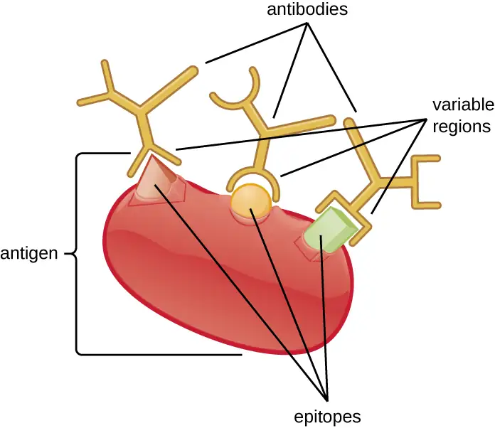
Check Your Understanding
- What property makes antibodies useful for research and clinical diagnosis?
- What is cross-reactivity and why does it occur?
Producing Polyclonal Antibodies¶
Antibodies used for research and diagnostic purposes are often obtained by injecting a lab animal such as a rabbit or a goat with a specific antigen. Within a few weeks, the animal’s immune system will produce high levels of antibodies specific for the antigen. These antibodies can be harvested in an antiserum, which is whole serum collected from an animal following exposure to an antigen. Because most antigens are complex structures with multiple epitopes, they result in the production of multiple antibodies in the lab animal. This so-called polyclonal antibody response is also typical of the response to infection by the human immune system. Antiserum drawn from an animal will thus contain antibodies from multiple clones of B cells, with each B cell responding to a specific epitope on the antigen (Figure 20.3).
Lab animals are usually injected at least twice with antigen when being used to produce antiserum. The second injection will activate memory cells that make class IgG antibodies against the antigen. The memory cells also undergo affinity maturation, resulting in a pool of antibodies with higher average affinity. Affinity maturation occurs because of mutations in the immunoglobulin gene variable regions, resulting in B cells with slightly altered antigen-binding sites. On re-exposure to the antigen, those B cells capable of producing antibody with higher affinity antigen-binding sites will be stimulated to proliferate and produce more antibody than their lower-affinity peers. An adjuvant, which is a chemical that provokes a generalized activation of the immune system that stimulates greater antibody production, is often mixed with the antigen prior to injection.
Antiserum obtained from animals will not only contain antibodies against the antigen artificially introduced in the laboratory, but it will also contain antibodies to any other antigens to which the animal has been exposed during its lifetime. For this reason, antisera must first be “purified” to remove other antibodies before using the antibodies for research or diagnostic assays.
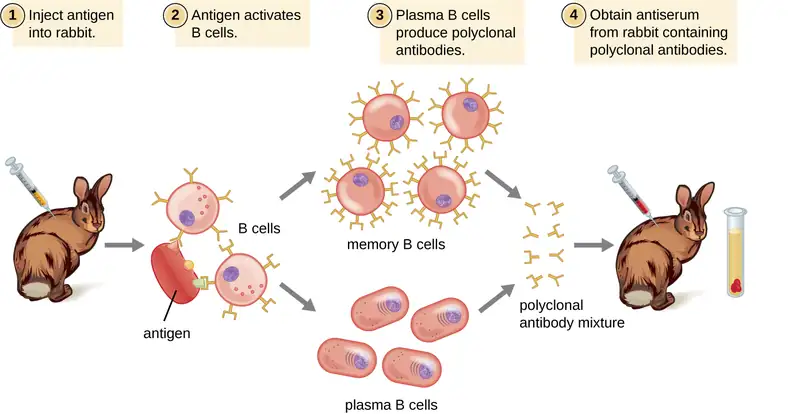
Clinical Uses of Polyclonal Antisera¶
Polyclonal antisera are used in many clinical tests that are designed to determine whether a patient is producing antibodies in response to a particular pathogen. While these tests are certainly powerful diagnostic tools, they have their limitations, because they are an indirect means of determining whether a particular pathogen is present. Tests based on a polyclonal response can sometimes lead to a false-positive result—in other words, a test that confirms the presence of an antigen that is, in fact, not present. Antibody-based tests can also result in a false-negative result, which occurs when the test fails to detect an antibody that is, in fact, present.
The accuracy of antibody tests can be described in terms of test sensitivity and test specificity. Test sensitivity is the probability of getting a positive test result when the patient is indeed infected. If a test has high sensitivity, the probability of a false negative is low. Test specificity, on the other hand, is the probability of getting a negative test result when the patient is not infected. If a test has high specificity, the probability of a false positive is low.
False positives often occur due to cross-reactivity, which can occur when epitopes from a different pathogen are similar to those found on the pathogen being tested for. For this reason, antibody-based tests are often used only as screening tests; if the results are positive, other confirmatory tests are used to make sure that the results were not a false positive.
For example, a blood sample from a patient suspected of having hepatitis C can be screened for the virus using antibodies that bind to antigens on hepatitis C virus. If the patient is indeed infected with hepatitis C virus, the antibodies will bind to the antigens, yielding a positive test result. If the patient is not infected with hepatitic C virus, the antibodies will generally not bind to anything and the test should be negative; however, a false positive may occur if the patient has been previously infected by any of a variety of pathogens that elicit antibodies that cross-react with the hepatitis C virus antigens. Antibody tests for hepatitis C have high sensitivity (a low probability of a false negative) but low specificity (a high probability of a false positive). Thus, patients who test positive must have a second, confirmatory test to rule out the possibility of a false positive. The confirmatory test is a more expensive and time-consuming test that directly tests for the presence of hepatitis C viral RNA in the blood. Only after the confirmatory test comes back positive can the patient be definitively diagnosed with a hepatitis C infection. Antibody-based tests can result in a false negative if, for any reason, the patient’s immune system has not produced detectable levels of antibodies. For some diseases, it may take several weeks following infection before the immune system produces enough antibodies to cross the detection threshold of the assay. In immunocompromised patients, the immune system may not be capable of producing a detectable level of antibodies.
Another limitation of using antibody production as an indicator of disease is that antibodies in the blood will persist long after the infection has been cleared. Depending on the type of infection, antibodies will be present for many months; sometimes, they may be present for the remainder of the patient’s life. Thus, a positive antibody-based test only means that the patient was infected at some point in time; it does not prove that the infection is active.
In addition to their role in diagnosis, polyclonal antisera can activate complement, detect the presence of bacteria in clinical and food industry settings, and perform a wide array of precipitation reactions that can detect and quantify serum proteins, viruses, or other antigens. However, with the many specificities of antibody present in a polyclonal antiserum, there is a significant likelihood that the antiserum will cross-react with antigens to which the individual was never exposed. Therefore, we must always account for the possibility of false-positive results when working with a polyclonal antiserum.
Check Your Understanding
- What is a false positive and what are some reasons that false positives occur?
- What is a false negative and what are some reasons that false negatives occur?
- If a patient tests negative on a highly sensitive test, what is the likelihood that the person is infected with the pathogen?
Producing Monoclonal Antibodies¶
Some types of assays require better antibody specificity and affinity than can be obtained using a polyclonal antiserum. To attain this high specificity, all of the antibodies must bind with high affinity to a single epitope. This high specificity can be provided by monoclonal antibodies (mAbs). Table 20.1 compares some of the important characteristics of monoclonal and polyclonal antibodies.
Unlike polyclonal antibodies, which are produced in live animals, monoclonal antibodies are produced in vitro using tissue-culture techniques. mAbs are produced by immunizing an animal, often a mouse, multiple times with a specific antigen. B cells from the spleen of the immunized animal are then removed. Since normal B cells are unable to proliferate forever, they are fused with immortal, cancerous B cells called myeloma cells, to yield hybridoma cells. All of the cells are then placed in a selective medium that allows only the hybridomas to grow; unfused myeloma cells cannot grow, and any unfused B cells die off. The hybridomas, which are capable of growing continuously in culture while producing antibodies, are then screened for the desired mAb. Those producing the desired mAb are grown in tissue culture; the culture medium is harvested periodically and mAbs are purified from the medium. This is a very expensive and time-consuming process. It may take weeks of culturing and many liters of media to provide enough mAbs for an experiment or to treat a single patient. mAbs are expensive (Figure 20.4).

Table 20.1
| Characteristics of Polyclonal and Monoclonal Antibodies | |
|---|---|
| Monoclonal Antibodies | Polyclonal Antibodies |
| Expensive production | Inexpensive production |
| Long production time | Rapid production |
| Large quantities of specific antibodies | Large quantities of nonspecific antibodies |
| Recognize a single epitope on an antigen | Recognize multiple epitopes on an antigen |
| Production is continuous and uniform once the hybridoma is made | Different batches vary in composition |
Clinical Uses of Monoclonal Antibodies¶
Since the most common methods for producing monoclonal antibodies use mouse cells, it is necessary to create humanized monoclonal antibodies for human clinical use. Mouse antibodies cannot be injected repeatedly into humans, because the immune system will recognize them as being foreign and will respond to them with neutralizing antibodies. This problem can be minimized by genetically engineering the antibody in the mouse B cell. The variable regions of the mouse light and heavy chain genes are ligated to human constant regions, and the chimeric gene is then transferred into a host cell. This allows production of a mAb that is mostly “human” with only the antigen-binding site being of mouse origin.
Humanized mAbs have been successfully used to treat cancer with minimal side effects. For example, the humanized monoclonal antibody drug Herceptin has been helpful for the treatment of some types of breast cancer. There have also been a few preliminary trials of humanized mAb for the treatment of infectious diseases, but none of these treatments are currently in use. In some cases, mAbs have proven too specific to treat infectious diseases, because they recognize some serovars of a pathogen but not others. Using a cocktail of multiple mAbs that target different strains of the pathogen can address this problem. However, the great cost associated with mAb production is another challenge that has prevented mAbs from becoming practical for use in treating microbial infections.3
One promising technology for inexpensive mAbs is the use of genetically engineered plants to produce antibodies (or plantibodies). This technology transforms plant cells into antibody factories rather than relying on tissue culture cells, which are expensive and technically demanding. In some cases, it may even be possible to deliver these antibodies by having patients eat the plants rather than by extracting and injecting the antibodies. For example, in 2013, a research group cloned antibody genes into plants that had the ability to neutralize an important toxin from bacteria that can cause severe gastrointestinal disease.4 Eating the plants could potentially deliver the antibodies directly to the toxin.
Check Your Understanding
- How are humanized monoclonal antibodies produced?
- What does the “monoclonal” of monoclonal antibodies mean?
Micro Connections: Using Monoclonal Antibodies to Combat Ebola
During the 2014–2015 Ebola outbreak in West Africa, a few Ebola-infected patients were treated with ZMapp, a drug that had been shown to be effective in trials done in rhesus macaques only a few months before.5 ZMapp is a combination of three mAbs produced by incorporating the antibody genes into tobacco plants using a viral vector. By using three mAbs, the drug is effective across multiple strains of the virus. Unfortunately, there was only enough ZMapp to treat a tiny number of patients.
While the current technology is not adequate for producing large quantities of ZMapp, it does show that plantibodies—plant-produced mAbs—are feasible for clinical use, potentially cost effective, and worth further development. The last several years have seen an explosion in the number of new mAb-based drugs for the treatment of cancer and infectious diseases; however, the widespread use of such drugs is currently inhibited by their exorbitant cost, especially in underdeveloped parts of the world, where a single dose might cost more than the patient’s lifetime income. Developing methods for cloning antibody genes into plants could reduce costs dramatically.
20.2 Detecting Antigen-Antibody Complexes¶
Learning Objectives
By the end of this section, you will be able to:
- Describe various types of assays used to find antigen-antibody complexes
- Describe the circumstances under which antigen-antibody complexes precipitate out of solution
- Explain how antibodies in patient serum can be used to diagnose disease
Laboratory tests to detect antibodies and antigens outside of the body (e.g., in a test tube) are called in vitro assays. When both antibodies and their corresponding antigens are present in a solution, we can often observe a precipitation reaction in which large complexes (lattices) form and settle out of solution. In the next several sections, we will discuss several common in vitro assays.
Precipitin Reactions¶
A visible antigen-antibody complex is called a precipitin, and in vitro assays that produce a precipitin are called precipitin reactions. A precipitin reaction typically involves adding soluble antigens to a test tube containing a solution of antibodies. Each antibody has two arms, each of which can bind to an epitope. When an antibody binds to two antigens, the two antigens become bound together by the antibody. A lattice can form as antibodies bind more and more antigens together, resulting in a precipitin (Figure 20.5). Most precipitin tests use a polyclonal antiserum rather than monoclonal antibodies because polyclonal antibodies can bind to multiple epitopes, making lattice formation more likely. Although mAbs may bind some antigens, the binding will occur less often, making it much less likely that a visible precipitin will form.
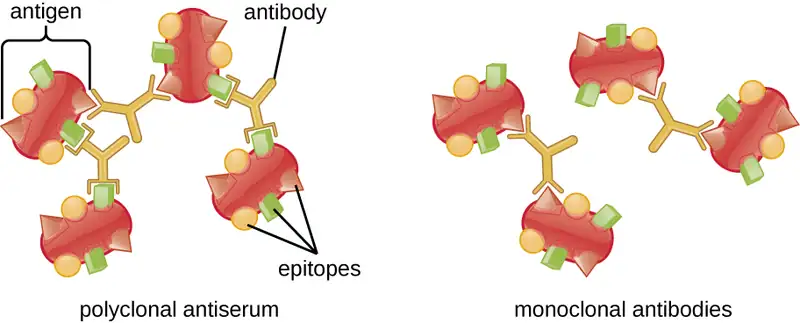
The amount of precipitation also depends on several other factors. For example, precipitation is enhanced when the antibodies have a high affinity for the antigen. While most antibodies bind antigen with high affinity, even high-affinity binding uses relatively weak noncovalent bonds, so that individual interactions will often break and new interactions will occur.
In addition, for precipitin formation to be visible, there must be an optimal ratio of antibody to antigen. The optimal ratio is not likely to be a 1:1 antigen-to-antibody ratio; it can vary dramatically, depending on the number of epitopes on the antigen and the class of antibody. Some antigens may have only one or two epitopes recognized by the antiserum, whereas other antigens may have many different epitopes and/or multiple instances of the same epitope on a single antigen molecule.
Figure 20.6 illustrates how the ratio of antigen and antibody affects the amount of precipitation. To achieve the optimal ratio, antigen is slowly added to a solution containing antibodies, and the amount of precipitin is determined qualitatively. Initially, there is not enough antigen to produce visible lattice formation; this is called the zone of antibody excess. As more antigen is added, the reaction enters the equivalence zone (or zone of equivalence), where both the optimal antigen-antibody interaction and maximal precipitation occur. If even more antigen were added, the amount of antigen would become excessive and actually cause the amount of precipitation to decline.
![(A) Diagram of polyclonal antiserum. Antigens with multiple epitopes (shapes on their surface) are bound to different antibodies (each antibody binds to a different epitope). B) Diagram of monoclonal antibodies. Antigens with multiple epitopes have only one type of antibody bound to a single epitope on each. A graph; the X-axis is labeled antigen added and Y-axis is labeled precipitin formed. In the zone of antibody excess there is more antibody than antigen. In this case, there is no precipitate. In the equivalence zone there are approximately equal amounts of antigen and antibody. In this case a precipitate does form. In the zone of antigen excess, there is more antigen than antibody and no precipitate forms.](img/osc-microbio-20-02-precipform.webp)
Check Your Understanding
- What is a precipitin?
- Why do polyclonal antisera produce a better precipitin reaction?
Precipitin Ring Test¶
A variety of techniques allow us to use precipitin formation to quantify either antigen concentration or the amount of antibody present in an antiserum. One such technique is the precipitin ring test (Figure 20.7), which is used to determine the relative amount of antigen-specific antibody in a sample of serum. To perform this test, a set of test tubes is prepared by adding an antigen solution to the bottom of each tube. Each tube receives the same volume of solution, and the concentration of antigens is constant (e.g., 1 mg/mL). Next, glycerol is added to the antigen solution in each test tube, followed by a serial dilution of the antiserum. The glycerol prevents mixing of the antiserum with the antigen solution, allowing antigen-antibody binding to take place only at the interface of the two solutions. The result is a visible ring of precipitin in the tubes that have an antigen-antibody ratio within the equivalence zone. This highest dilution with a visible ring is used to determine the titer of the antibodies. The titer is the reciprocal of the highest dilution showing a positive result, expressed as a whole number. In Figure 20.7, the titer is 16.
While a measurement of titer does not tell us in absolute terms how much antibody is present, it does give a measure of biological activity, which is often more important than absolute amount. In this example, it would not be useful to know what mass of IgG were present in the antiserum, because there are many different specificities of antibody present; but it is important for us to know how much of the antibody activity in a patient’s serum is directed against the antigen of interest (e.g., a particular pathogen or allergen).
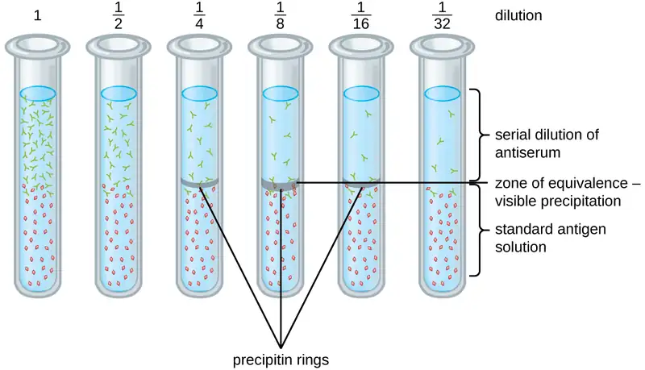
Ouchterlony Assay¶
While the precipitin ring test provides insights into antibody-antigen interactions, it also has some drawbacks. It requires the use of large amounts of serum, and great care must be taken to avoid mixing the solutions and disrupting the ring. Performing a similar test in an agar gel matrix can minimize these problems. This type of assay is variously called double immunodiffusion or the Ouchterlony assay for Orjan Ouchterlony,6 who first described the technique in 1948.
When agar is highly purified, it produces a clear, colorless gel. Holes are punched in the gel to form wells, and antigen and antisera are added to neighboring wells. Proteins are able to diffuse through the gel, and precipitin arcs form between the wells at the zone of equivalence. Because the precipitin lattice is too large to diffuse through the gel, the arcs are firmly locked in place and easy to see (Figure 20.8).
Although there are now more sensitive and quantitative methods of detecting antibody-antigen interactions, the Ouchterlony test provides a rapid and qualitative way of determining whether an antiserum has antibodies against a particular antigen. The Ouchterlony test is particularly useful when looking for cross-reactivity. We can check an antiserum against a group of closely related antigens and see which combinations form precipitin arcs.
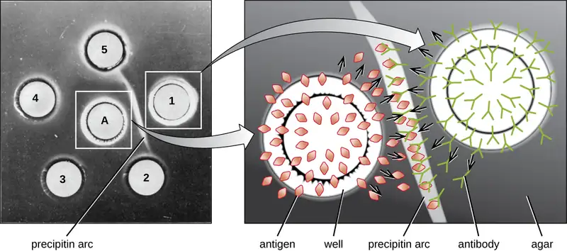
Radial Immunodiffusion Assay¶
The radial immunodiffusion (RID) assay is similar to the Ouchterlony assay but is used to precisely quantify antigen concentration rather than to compare different antigens. In this assay, the antiserum is added to tempered agar (liquid agar at slightly above 45 °C), which is poured into a small petri dish or onto a glass slide and allowed to cool. Wells are cut in the cooled agar, and antigen is then added to the wells and allowed to diffuse. As the antigen and antibody interact, they form a zone of precipitation. The square of the diameter of the zone of precipitation is directly proportional to the concentration of antigen. By measuring the zones of precipitation produced by samples of known concentration (see the outer ring of samples in Figure 20.9), we can prepare a standard curve for determining the concentration of an unknown solution. The RID assay is a also useful test for determining the concentration of many serum proteins such as the C3 and C4 complement proteins, among others.
![At the top is a photograph of 4 clear dots in a row. Dot 1 has a small ring around it, dot 2 has a larger ring, dot 3 has a larger ring, and dot 4 has an even larger ring. These have arrows leading to a graph that shows that the size of the ring (zone of precipitation diameter) relates to the concentration of antigen. The lower antigen concentration results in a smaller ring. Another dot (#5) off to the side contains an unknown antigen concentration. The size of the ring is measured and used to find the concentration of antigen. This is done by finding the ring size on the line from the graph and connecting that to the X-axis to find the concentration of antigen.](img/osc-microbio-20-02-rid.webp)
Check Your Understanding
- Why does a precipitin ring form in a precipitin ring test, and what are some reasons why a ring might not form?
- Compare and contrast the techniques used in an Ouchterlony assay and a radial immunodiffusion assay.
Flocculation Assays¶
A flocculation assay is similar to a precipitin reaction except that it involves insoluble antigens such as lipids. A flocculant is similar to a precipitin in that there is a visible lattice of antigen and antibody, but because lipids are insoluble in aqueous solution, they cannot precipitate. Instead of precipitation, flocculation (foaming) is observed in the test tube fluid.
Micro Connections: Using Flocculation to Test for Syphilis
Syphilis is a sexually transmitted infection that can cause severe, chronic disease in adults. In addition, it is readily passed from infected people to their newborns during pregnancy and childbirth, often resulting in stillbirth or serious long-term health problems for the infant. Unfortunately, syphilis can also be difficult to diagnose in people, because it is often asymptomatic, especially in females. In addition, the causative agent, the bacterium Treponema pallidum, is both difficult to grow on conventional lab media and too small to see using routine microcopy. For these reasons, presumptive diagnoses of syphilis are generally confirmed indirectly in the laboratory using tests that detect antibodies to treponemal antigens.
In 1906, German scientist August von Wassermann (1866–1925) introduced the first test for syphilis that relied on detecting anti-treponemal antibodies in the patient’s blood. The antibodies detected in the Wassermann test were antiphospholipid antibodies that are nonspecific to T. pallidum. Their presence can assist in the diagnosis of syphilis, but because they are nonspecific, they can also lead to false-positive results in patients with other diseases and autoimmune conditions. The original Wasserman test has been modified over the years to minimize false-positives and is now known as the Venereal Disease Research Lab test, better known by its acronym, the VDRL test.
To perform the VDRL test, patient serum or cerebral spinal fluid is placed on a slide with a mixture of cardiolipin (an antigenic phospholipid found in the mitochondrial membrane of various pathogens), lecithin, and cholesterol. The lecithin and cholesterol stabilize the reaction and diminish false positives. Anti-treponemal antibodies from an infected patient’s serum will bind cardiolipin and form a flocculant. Although the VDRL test is more specific than the original Wassermann assay, false positives may still occur in patients with autoimmune diseases that cause extensive cell damage (e.g., systemic lupus erythematosus).
Neutralization Assay¶
To cause infection, viruses must bind to receptors on host cells. Antiviral antibodies can neutralize viral infections by coating the virions, blocking the binding (Figure 18.7). This activity neutralizes virions and can result in the formation of large antibody-virus complexes (which are readily removed by phagocytosis) or by antibody binding to the virus and blocking its binding to host cell receptors. This neutralization activity is the basis of neutralization assays, sensitive assays used for diagnoses of viral infections.
When viruses infect cells, they often cause damage (cytopathic effects) that may include lysis of the host cells. Cytopathic effects can be visualized by growing host cells in a petri dish, covering the cells with a thin layer of agar, and then adding virus (see Isolation, Culture, and Identification of Viruses). The virus will diffuse very slowly through the agar. A virus will enter a host cell, proliferate (causing cell damage), be released from the dead host cell, and then move to neighboring cells. As more and more cells die, plaques of dead cells will form (Figure 20.10).
During the course of a viral infection, the patient will mount an antibody response to the virus, and we can quantify those antibodies using a plaque reduction assay. To perform the assay, a serial dilution is carried out on a serum sample. Each dilution is then mixed with a standardized amount of the suspect virus. Any virus-specific antibodies in the serum will neutralize some of the virus. The suspensions are then added to host cells in culture to allow any nonneutralized virus to infect the cells and form plaques after several days. The titer is defined as the reciprocal of the highest dilution showing a 50% reduction in plaques. Titer is always expressed as a whole number. For example, if a 1/64 dilution was the highest dilution to show 50% plaque reduction, then the titer is 64.
The presence of antibodies in the patient’s serum does not tell us whether the patient is currently infected or was infected in the past. Current infections can be identified by waiting two weeks and testing another serum sample. A four-fold increase in neutralizing titer in this second sample indicates a new infection.
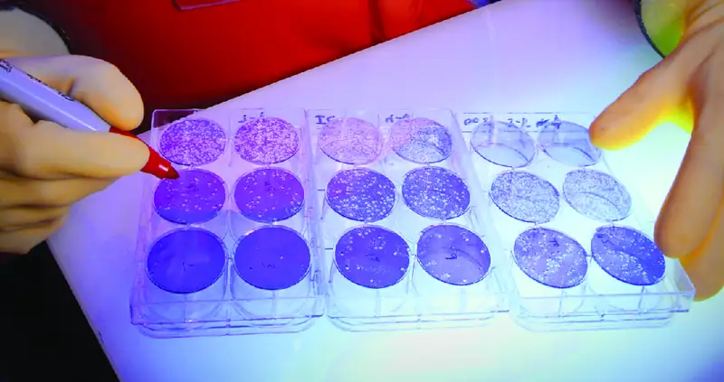
Check Your Understanding
- In a neutralization assay, if a patient’s serum has high numbers of antiviral antibodies, would you expect to see more or fewer plaques?
Immunoelectrophoresis¶
When a patient has elevated protein levels in the blood or is losing protein in the urine, a clinician will often order a polyacrylamide gel electrophoresis (PAGE) assay (see Visualizing and Characterizing DNA, RNA, and Protein). This assay compares the relative abundance of the various types of serum proteins. Abnormal protein electrophoresis patterns can be further studied using immunoelectrophoresis (IEP). The IEP begins by running a PAGE. Antisera against selected serum proteins are added to troughs running parallel to the electrophoresis track, forming precipitin arcs similar to those seen in an Ouchterlony assay (Figure 20.11). This allows the identification of abnormal immunoglobulin proteins in the sample.
IEP is particularly useful in the diagnosis of multiple myeloma, a cancer of antibody-secreting cells. Patients with multiple myeloma cannot produce healthy antibodies; instead they produce abnormal antibodies that are monoclonal proteins (M proteins). Thus, patients with multiple myeloma will present with elevated serum protein levels that show a distinct band in the gamma globulin region of a protein electrophoresis gel and a sharp spike (in M protein) on the densitometer scan rather than the normal broad smear (Figure 20.12). When antibodies against the various types of antibody heavy and light chains are used to form precipitin arcs, the M protein will cause distinctly skewed arcs against one class of heavy chain and one class of light chain as seen in Figure 20.11.
![a) A graph showing a large peak at alb and smaller peaks at alpha1, alpha2, beta, and gamma. B) A photograph showing various white lines on a blue background. The top line is labeled anti-human whole serum, the next is anti-IgG, the next is anti-IgA, the next is anti-K and the next is anti-lambda. Each of these is near a band from both the normal and patient urine samples. Black arrows point to the patient’s sample next to anti-IgG and anti-k. A white arrow points to the band from the patient near anti-K.](img/osc-microbio-20-02-iep.webp)
Micro Connections: Protein Electrophoresis and the Characterization of Immunoglobulin Structure
The advent of electrophoresis ultimately led to researching and understanding the structure of antibodies. When Swedish biochemist Arne Tiselius (1902–1971) published the first protein electrophoresis results in 1937,7 he could identify the protein albumin (the smallest and most abundant serum protein) by the sharp band it produced in the gel. The other serum proteins could not be resolved in a simple protein electrophoresis, so he named the three broad bands, with many proteins in each band, alpha, beta, and gamma globulins. Two years later, American immunologist Elvin Kabat (1914–2000) traveled to Sweden to work with Tiselius using this new technique and showed that antibodies migrated as gamma globulins.8 With this new understanding in hand, researchers soon learned that multiple myeloma, because it is a cancer of antibody-secreting cells, could be tentatively diagnosed by the presence of a large M spike in the gamma-globulin region by protein electrophoresis. Prior to this discovery, studies on immunoglobulin structure had been minimal, because of the difficulty of obtaining pure samples to study. Sera from multiple myeloma patients proved to be an excellent source of highly enriched monoclonal immunoglobulin, providing the raw material for studies over the next 20-plus years that resulted in the elucidation of the structure of immunoglobulin.
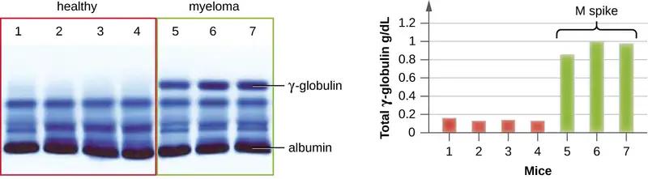
Check Your Understanding
- In general, what does an immunoelectrophoresis assay accomplish?
Immunoblot Assay: The Western Blot¶
After performing protein gel electrophoresis, specific proteins can be identified in the gel using antibodies. This technique is known as the western blot. Following separation of proteins by PAGE, the protein antigens in the gel are transferred to and immobilized on a nitrocellulose membrane. This membrane can then be exposed to a primary antibody produced to specifically bind to the protein of interest. A second antibody equipped with a molecular beacon will then bind to the first. These secondary antibodies are coupled to another molecule such as an enzyme or a fluorophore (a molecule that fluoresces when excited by light). When using antibodies coupled to enzymes, a chromogenic substrate for the enzyme is added. This substrate is usually colorless but will develop color in the presence of the antibody. The fluorescence or substrate coloring identifies the location of the specific protein in the membrane to which the antibodies are bound (Figure 20.13).
Typically, polyclonal antibodies are used for western blot assays. They are more sensitive than mAbs because of their ability to bind to various epitopes of the primary antigen, and the signal from polyclonal antibodies is typically stronger than that from mAbs. Monoclonal antibodies can also be used; however, they are much more expensive to produce and are less sensitive, since they are only able to recognize one specific epitope.
Several variations of the western blot are useful in research. In a southwestern blot, proteins are separated by SDS-PAGE, blotted onto a nitrocellulose membrane, allowed to renature, and then probed with a fluorescently or radioactively labeled DNA probe; the purpose of the southwestern is to identify specific DNA-protein interactions. Far-western blots are carried out to determine protein-protein interactions between immobilized proteins (separated by SDS-PAGE, blotted onto a nitrocellulose membrane, and allowed to renature) and non-antibody protein probes. The bound non-antibody proteins that interact with the immobilized proteins in a far-western blot may be detected by radiolabeling, fluorescence, or the use of an antibody with an enzymatic molecular beacon.
![(a) A diagram showing the process of a western blot. Step 1 – a gel is on top of a nitrocellulose membrane and filter paper is on either side. This is all sandwiched between positive and negative plates. If the proteins are hydrophobic use PVDF membrane instead of nitrocellulose. This causes the proteins to bind to the membrane. At this point there are many protein bands. Then antibodies specific to the protein on interest are added. They bind to one of the protein bands on the membrane. Next labeled antibodies bidn to the first set of antibodies. This results in a single visible band. (b) A photo of the results shows dark bands on a white membrane.](img/osc-microbio-20-02-western.webp)
Check Your Understanding
- What is the function of the enzyme in the immunoblot assay?
Complement-Mediated Immunoassay¶
One of the key functions of antibodies is the activation (fixation) of complement. When antibody binds to bacteria, for example, certain complement proteins recognize the bound antibody and activate the complement cascade. In response, other complement proteins bind to the bacteria where some serve as opsonins to increase the efficiency of phagocytosis and others create holes in gram-negative bacterial cell membranes, causing lysis. This lytic activity can be used to detect the presence of antibodies against specific antigens in the serum.
Red blood cells are good indicator cells to use when evaluating complement-mediated cytolysis. Hemolysis of red blood cells releases hemoglobin, which is a brightly colored pigment, and hemolysis of even a small number of red cells will cause the solution to become noticeably pink (Figure 20.14). This characteristic plays a role in the complement fixation test, which allows the detection of antibodies against specific pathogens. The complement fixation test can be used to check for antibodies against pathogens that are difficult to culture in the lab such as fungi, viruses, or the bacteria Chlamydia.
To perform the complement fixation test, antigen from a pathogen is added to patient serum. If antibodies to the antigen are present, the antibody will bind the antigen and fix all the available complement. When red blood cells and antibodies against red blood cells are subsequently added to the mix, there will be no complement left to lyse the red cells. Thus, if the solution remains clear, the test is positive. If there are no antipathogen antibodies in the patient’s serum, the added antibodies will activate the complement to lyse the red cells, yielding a negative test (Figure 20.14).
![Diagram of the complement fixation test. 1. Patient A’s serum contains antibodies to the suspected antigen. Patient B’s serum does not. Both patients have complement, but different amounts. 2. Heating the serum destroys all of the complement in the patient’s serum. Antibodies remain in Patient A’s serum. 3. An equal amount of complement is then added to the serum for both patients. Antigens are also added. In patient A’s serum, antibodies bind to antigens and complement fixation occurs. Patient B’s serum lacks antibodies, so complement fixation does not occur. 4. Sheep RBCs and antibodies to sheep RBCs are added to both samples. 5. In patient A, complement is already fixed and cannot lyse RBCs. The antibodies bind to RBCs and settle to the bottom. In patient B, antibodies bind to RBCs and complement lyses the RBCs. Serum turns pink.](img/osc-microbio-20-02-complement.webp)
Link to Learning
View this video to see an outline of the steps of the complement fixation test.
Check Your Understanding
- In a complement fixation test, if the serum turns pink, does the patient have antibodies to the antigen or not? Explain.
Table 20.2 summarizes the various types of antibody-antigen assays discussed in this section.
Table 20.2
| Mechanisms of Select Antibody-Antigen Assays | ||
|---|---|---|
| Type of Assay | Mechanism | Examples |
| Precipitation | Antibody binds to soluble antigen, forming a visible precipitin | Precipitin ring test to visualize lattice formation in solution |
| Immunoelectrophoresis to examine distribution of antigens following electrophoresis | ||
| Ouchterlony assay to compare diverse antigens | ||
| Radial immunodiffusion assay to quantify antigens | ||
| Flocculation | Antibody binds to insoluble molecules in suspension, forming visible aggregates | VDRL test for syphilis |
| Neutralization | Antibody binds to virus, blocking viral entry into target cells and preventing formation of plaques | Plaque reduction assay for detecting presence of neutralizing antibodies in patient sera |
| Complement activation | Antibody binds to antigen, inducing complement activation and leaving no complement to lyse red blood cells | Complement fixation test for patient antibodies against hard-to-culture bacteria such as Chlamydia |
20.3 Agglutination Assays¶
Learning Objectives
By the end of this section, you will be able to:
- Compare direct and indirect agglutination
- Identify various uses of hemagglutination in the diagnosis of disease
- Explain how blood types are determined
- Explain the steps used to cross-match blood to be used in a transfusion
In addition to causing precipitation of soluble molecules and flocculation of molecules in suspension, antibodies can also clump together cells or particles (e.g., antigen-coated latex beads) in a process called agglutination (Figure 18.9). Agglutination can be used as an indicator of the presence of antibodies against bacteria or red blood cells. Agglutination assays are usually quick and easy to perform on a glass slide or microtiter plate (Figure 20.15). Microtiter plates have an array of wells to hold small volumes of reagents and to observe reactions (e.g., agglutination) either visually or using a specially designed spectrophotometer. The wells come in many different sizes for assays involving different volumes of reagents.
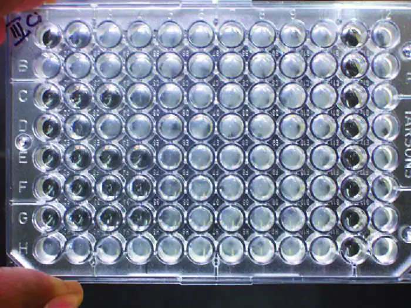
Agglutination of Bacteria and Viruses¶
The use of agglutination tests to identify streptococcal bacteria was developed in the 1920s by Rebecca Lancefield working with her colleagues A.R. Dochez and Oswald Avery.9 She used antibodies to identify M protein, a virulence factor on streptococci that is necessary for the bacteria’s ability to cause strep throat. Production of antibodies against M protein is crucial in mounting a protective response against the bacteria.
Lancefield used antisera to show that different strains of the same species of streptococci express different versions of M protein, which explains why children can come down with strep throat repeatedly. Lancefield classified beta-hemolytic streptococci into many groups based on antigenic differences in group-specific polysaccharides located in the bacterial cell wall. The strains are called serovars because they are differentiated using antisera. Identifying the serovars present in a disease outbreak is important because some serovars may cause more severe disease than others.
The method developed by Lancefield is a direct agglutination assay, since the bacterial cells themselves agglutinate. A similar strategy is more commonly used today when identifying serovars of bacteria and viruses; however, to improve visualization of the agglutination, the antibodies may be attached to inert latex beads. This technique is called an indirect agglutination assay (or latex fixation assay), because the agglutination of the beads is a marker for antibody binding to some other antigen (Figure 20.16). Indirect assays can be used to detect the presence of either antibodies or specific antigens.
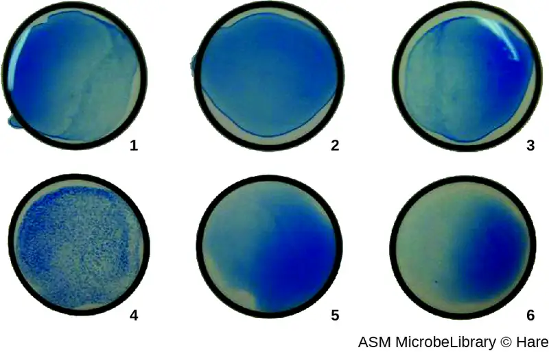
To identify antibodies in a patient’s serum, the antigen of interest is attached to latex beads. When mixed with patient serum, the antibodies will bind the antigen, cross-linking the latex beads and causing the beads to agglutinate indirectly; this indicates the presence of the antibody (Figure 20.17). This technique is most often used when looking for IgM antibodies, because their structure provides maximum cross-linking. One widely used example of this assay is a test for rheumatoid factor (RF) to confirm a diagnosis of rheumatoid arthritis. RF is, in fact, the presence of IgM antibodies that bind to the patient’s own IgG. RF will agglutinate IgG-coated latex beads.
In the reverse test, soluble antigens can be detected in a patient’s serum by attaching specific antibodies (commonly mAbs) to the latex beads and mixing this complex with the serum (Figure 20.17).
Agglutination tests are widely used in underdeveloped countries that may lack appropriate facilities for culturing bacteria. For example, the Widal test, used for the diagnosis of typhoid fever, looks for agglutination of Salmonella enterica subspecies typhi in patient sera. The Widal test is rapid, inexpensive, and useful for monitoring the extent of an outbreak; however, it is not as accurate as tests that involve culturing of the bacteria. The Widal test frequently produces false positives in patients with previous infections with other subspecies of Salmonella, as well as false negatives in patients with hyperproteinemia or immune deficiencies.
In addition, agglutination tests are limited by the fact that patients generally do not produce detectable levels of antibody during the first week (or longer) of an infection. A patient is said to have undergone seroconversion when antibody levels reach the threshold for detection. Typically, seroconversion coincides with the onset of signs and symptoms of disease. However, in an HIV infection, for example, it generally takes 3 weeks for seroconversion to take place, and in some instances, it may take much longer.
Similar to techniques for the precipitin ring test and plaque assays, it is routine to prepare serial two-fold dilutions of the patient’s serum and determine the titer of agglutinating antibody present. Since antibody levels change over time in both primary and secondary immune responses, by checking samples over time, changes in antibody titer can be detected. For example, a comparison of the titer during the acute phase of an infection versus the titer from the convalescent phase will distinguish whether an infection is current or has occurred in the past. It is also possible to monitor how well the patient’s immune system is responding to the pathogen.
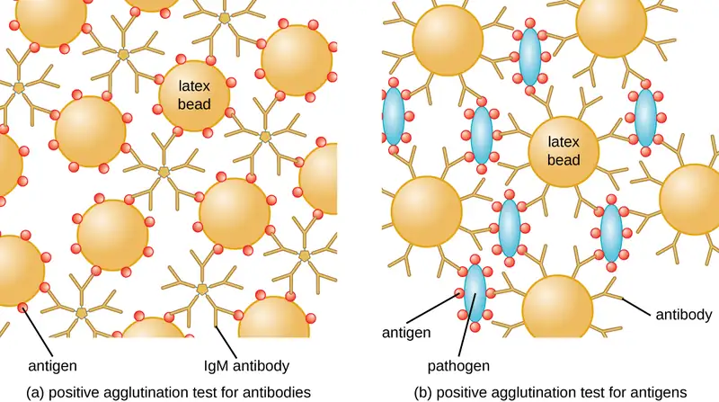
Link to Learning
Watch this video that demonstrates agglutination reactions with latex beads.
Check Your Understanding
- How is agglutination used to distinguish serovars from each other?
- In a latex bead assay to test for antibodies in a patient's serum, with what are the beads coated?
- What has happened when a patient has undergone seroconversion?
Hemagglutination¶
Agglutination of red blood cells is called hemagglutination. One common assay that uses hemagglutination is the direct Coombs’ test, also called the direct antihuman globulin test (DAT), which generally looks for nonagglutinating antibodies. The test can also detect complement attached to red blood cells.
The Coombs’ test is often employed when a newborn has jaundice, yellowing of the skin caused by high blood concentrations of bilirubin, a product of the breakdown of hemoglobin in the blood. The Coombs’ test is used to determine whether the child’s red blood cells have been bound by antibodies during pregnancy. These antibodies would activate complement, leading to red blood cell lysis and the subsequent jaundice. Other conditions that can cause positive direct Coombs’ tests include hemolytic transfusion reactions, autoimmune hemolytic anemia, infectious mononucleosis (caused by Epstein-Barr virus), syphilis, and Mycoplasma pneumonia. A positive direct Coombs’ test may also be seen in some cancers and as an allergic reaction to some drugs (e.g., penicillin).
The antibodies bound to red blood cells in these conditions are most often IgG, and because of the orientation of the antigen-binding sites on IgG and the comparatively large size of a red blood cell, it is unlikely that any visible agglutination will occur. However, the presence of IgG bound to red blood cells can be detected by adding Coombs’ reagent, an antiserum containing antihuman IgG antibodies (that may be combined with anti-complement) (Figure 20.18). The Coombs’ reagent links the IgG attached to neighboring red blood cells and thus promotes agglutination.
There is also an indirect Coombs’ test known as the indirect antiglobulin test (IAT). This screens an individual for antibodies against red blood cell antigens (other than the A and B antigens) that are unbound in a patient’s serum (Figure 20.18). IAT can be used to screen pregnant people for antibodies that may cause hemolytic disease of the newborn. It can also be used prior to giving blood transfusions. More detail on how the IAT is performed is discussed below.
![A) Diagram of direct Coomb’s test. 1. Blood sample from a patient with hemolytic anemia with antibodies attached to red blood cells. 2. Antibodies coat the patient’s red blood cells. 3. A few drops of Coomb’s reagent (containing anti-human antibodies) is mixed in with the patient’s blood sample. 4. Agglutination reaction (clumping) is visible after cross-linkage of antibodies. B) Diagram of indirect Coomb’s test. 1. Patient's serum containing antibodies is drawn. 2. Donor blood is added. 3. Patient's antibodies bind to donor's red blood cells. 4. A few drops of Coombs’ reagent are mixed with the sample. 5. Agglutination reaction is observed.](img/osc-microbio-20-03-coombs.webp)
Antibodies that bind to red blood cells are not the only cause of hemagglutination. Some viruses also bind to red blood cells, and this binding can cause agglutination when the viruses cross-link the red blood cells. For example, influenza viruses have two different types of viral spikes called neuraminidase (N) and hemagglutinin (H), the latter named for its ability to agglutinate red blood cells (see Viruses). Thus, we can use red blood cells to detect the presence of influenza virus by direct hemagglutination assays (HA), in which the virus causes visible agglutination of red blood cells. The mumps and rubella viruses can also be detected using HA.
Most frequently, a serial dilution viral agglutination assay is used to measure the titer or estimate the amount of virus produced in cell culture or for vaccine production. A viral titer can be determined using a direct HA by making a serial dilution of the sample containing the virus, starting with a high concentration of sample that is then diluted in a series of wells. The highest dilution producing visible agglutination is the titer. The assay is carried out in a microtiter plate with V- or round-bottomed wells. In the presence of agglutinating viruses, the red blood cells and virus clump together and produce a diffuse mat over the bottom of the well. In the absence of virus, the red blood cells roll or sediment to the bottom of the well and form a dense pellet, which is why flat-bottomed wells cannot be used (Figure 20.19).
A modification of the HA assay can be used to determine the titer of antiviral antibodies. The presence of these antibodies in a patient’s serum or in a lab-produced antiserum will neutralize the virus and block it from agglutinating the red cells, making this a viral hemagglutination inhibition assay (HIA). In this assay, patient serum is mixed with a standardized amount of virus. After a short incubation, a standardized amount of red blood cells is added and hemagglutination is observed. The titer of the patient’s serum is the highest dilution that blocks agglutination (Figure 20.20).
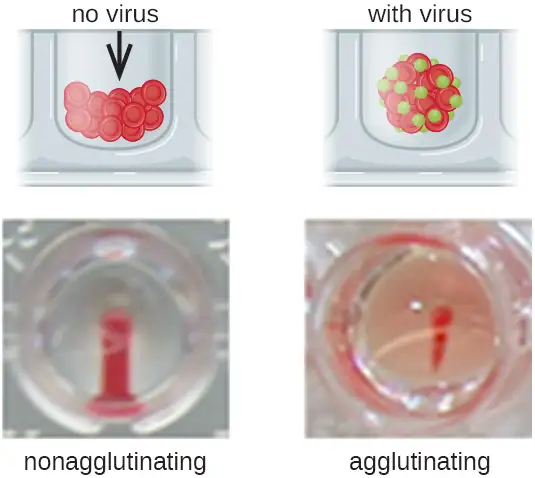
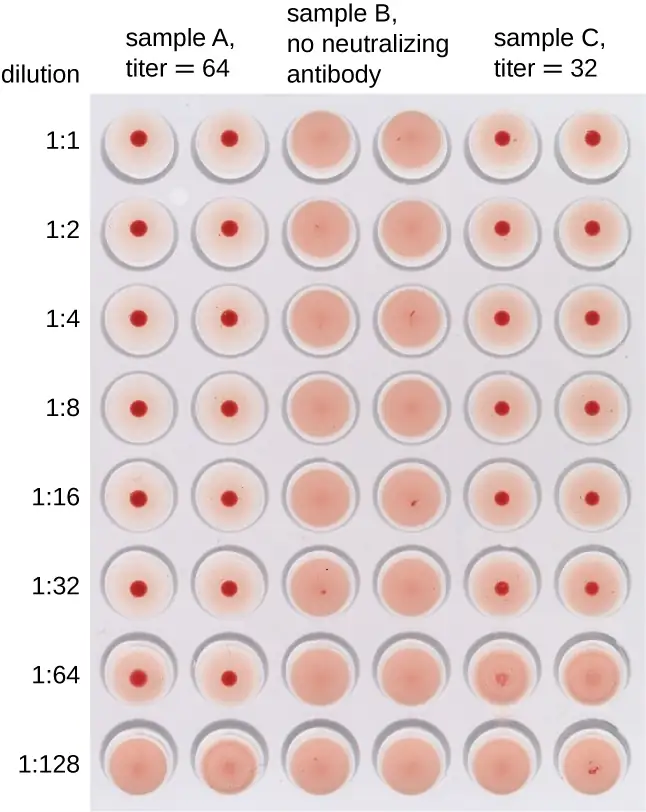
Check Your Understanding
- What is the mechanism by which viruses are detected in a hemagglutination assay?
- Which hemagglutination result tells us the titer of virus in a sample?
Eye on Ethics: Animals in the Laboratory
Much of what we know today about the human immune system has been learned through research conducted using animals—primarily, mammals—as models. Besides research, mammals are also used for the production of most of the antibodies and other immune system components needed for immunodiagnostics. Vaccines, diagnostics, therapies, and translational medicine in general have all been developed through research with animal models.
Consider some of the common uses of laboratory animals for producing immune system components. Guinea pigs are used as a source of complement, and mice are the primary source of cells for making mAbs. These mAbs can be used in research and for therapeutic purposes. Antisera are raised in a variety of species, including horses, sheep, goats, and rabbits. When producing an antiserum, the animal will usually be injected at least twice, and adjuvants may be used to boost the antibody response. The larger animals used for making antisera will have blood harvested repeatedly over long periods of time, with little harm to the animals, but that is not usually the case for rabbits. Although we can obtain a few milliliters of blood from the ear veins of rabbits, we usually need larger volumes, which results in the deaths of the animals.
We also use animals for the study of disease. The only way to grow Treponema pallidum for the study of syphilis is in living animals. Many viruses can be grown in cell culture, but growth in cell culture tells us very little about how the immune system will respond to the virus. When working on a newly discovered disease, we still employ Koch’s postulates, which require causing disease in lab animals using pathogens from pure culture as a crucial step in proving that a particular microorganism is the cause of a disease. Studying the proliferation of bacteria and viruses in animal hosts, and how the host immune system responds, has been central to microbiological research for well over 100 years.
While the practice of using laboratory animals is essential to scientific research and medical diagnostics, many people strongly object to the exploitation of animals for human benefit. This ethical argument is not a new one—indeed, one of Charles Darwin's daughters was an active antivivisectionist (vivisection is the practice of cutting or dissecting a live animal to study it). Most scientists acknowledge that there should be limits on the extent to which animals can be exploited for research purposes. Ethical considerations have led the National Institutes of Health (NIH) to develop strict regulations on the types of research that may be performed. These regulations also include guidelines for the humane treatment of lab animals, setting standards for their housing, care, and euthanization. The NIH document “Guide for the Care and Use of Laboratory Animals” makes it clear that the use of animals in research is a privilege granted by society to researchers.
The NIH guidelines are based on the principle of the three R’s: replace, refine, and reduce. Researchers should strive to replace animal models with nonliving models, replace vertebrates with invertebrates whenever possible, or use computer-models when applicable. They should refine husbandry and experimental procedures to reduce pain and suffering, and use experimental designs and procedures that reduce the number of animals needed to obtain the desired information. To obtain funding, researchers must satisfy NIH reviewers that the research justifies the use of animals and that their use is in accordance with the guidelines.
At the local level, any facility that uses animals and receives federal funding must have an Institutional Animal Care and Use Committee (IACUC) that ensures that the NIH guidelines are being followed. The IACUC must include researchers, administrators, a veterinarian, and at least one person with no ties to the institution, that is, a concerned citizen. This committee also performs inspections of laboratories and protocols. For research involving human subjects, an Institutional Review Board (IRB) ensures that proper guidelines are followed.
Link to Learning
Visit this site to view the NIH Guide for the Care and Use of Laboratory Animals.
Blood Typing and Cross-Matching¶
In addition to antibodies against bacteria and viruses to which they have previously been exposed, most individuals also carry antibodies against blood types other than their own. There are presently 33 immunologically important blood-type systems, many of which are restricted within various ethnic groups or rarely result in the production of antibodies. The most important and perhaps best known are the ABO and Rh blood groups (see Figure 19.4).
When units of blood are being considered for transfusion, pretransfusion blood testing must be performed. For the blood unit, commercially prepared antibodies against the A, B, and Rh antigens are mixed with red blood cells from the units to initially confirm that the blood type on the unit is accurate. Once a unit of blood has been requested for transfusion, it is vitally important to make sure the donor (unit of blood) and recipient (patient) are compatible for these crucial antigens. In addition to confirming the blood type of the unit, the patient’s blood type is also confirmed using the same commercially prepared antibodies to A, B, and Rh. For example, as shown in Figure 20.21, if the donor blood is A-positive, it will agglutinate with the anti-A antiserum and with the anti-Rh antiserum. If no agglutination is observed with any of the sera, then the blood type would be O-negative.
Following determination of the blood type, immediately prior to releasing the blood for transfusion, a cross-match is performed in which a small aliquot of the donor red blood cells are mixed with serum from the patient awaiting transfusion. If the patient does have antibodies against the donor red blood cells, hemagglutination will occur. To confirm any negative test results and check for sensitized red blood cells, Coombs’ reagent may be added to the mix to facilitate visualization of the antibody-red blood cell interaction.
Under some circumstances, a minor cross-match may be performed as well. In this assay, a small aliquot of donor serum is mixed with patient red blood cells. This allows the detection of agglutinizing antibodies in the donor serum. This test is rarely necessary because transfusions generally use packed red blood cells with most of the plasma removed by centrifugation.
Red blood cells have many other antigens in addition to ABO and Rh. While most people are unlikely to have antibodies against these antigens, people who have had multiple pregnancies or patients who have had multiple transfusions may have them because of repeated exposure. For this reason, an antibody screen test is used to determine if such antibodies are present. Patient serum is checked against commercially prepared, pooled, type O red blood cells that express these antigens. If agglutination occurs, the antigen to which the patient is responding must be identified and determined not to be present in the donor unit.
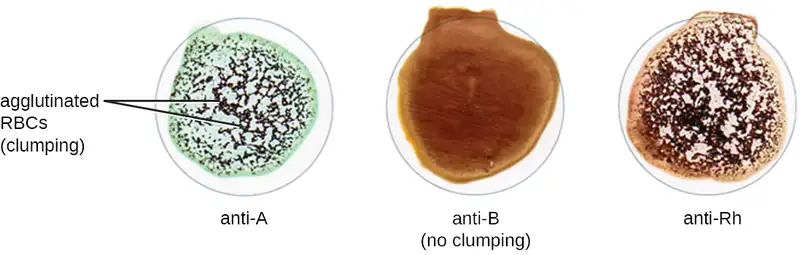
Check Your Understanding
- If a patient's blood agglutinates with anti-B serum, what is the patient’s blood type?
- What is a cross-match assay, and why is it performed?
Table 20.3 summarizes the various kinds of agglutination assays discussed in this section.
Table 20.3
| Mechanisms of Select Antibody-Antigen Assays | ||
|---|---|---|
| Type of Assay | Mechanism | Example |
| Agglutination | Direct: Antibody is used to clump bacterial cells or other large structures | Serotyping bacteria |
| Indirect: Latex beads are coupled with antigen or antibody to look for antibody or antigen, respectively, in patient serum | Confirming the presence of rheumatoid factor (IgM-binding Ig) in patient serum | |
| Hemagglutination | Direct: Some bacteria and viruses cross-link red blood cells and clump them together | Diagnosing influenza, mumps, and measles |
| Direct Coombs’ test (DAT): Detects nonagglutinating antibodies or complement proteins on red blood cells in vivo | Checking for maternal antibodies binding to neonatal red blood cells | |
| Indirect Coombs’ test (IAT): Screens an individual for antibodies against red blood cell antigens (other than the A and B antigens) that are unbound in a patient’s serum in vitro | Performing pretransfusion blood testing | |
| Viral hemagglutination inhibition: Uses antibodies from a patient to inhibit viral agglutination | Diagnosing various viral diseases by the presence of patient antibodies against the virus | |
| Blood typing and cross-matching: Detects ABO, Rh, and minor antigens in the blood | Matches donor blood to recipient immune requirements | |
20.4 EIAs and ELISAs¶
Learning Objectives
By the end of this section, you will be able to:
- Explain the differences and similarities between EIA, FEIA, and ELISA
- Describe the difference and similarities between immunohistochemistry and immunocytochemistry
- Describe the different purposes of direct and indirect ELISA
Similar to the western blot, enzyme immunoassays (EIAs) use antibodies to detect the presence of antigens. However, EIAs differ from western blots in that the assays are conducted in microtiter plates or in vivo rather than on an absorbent membrane. There are many different types of EIAs, but they all involve an antibody molecule whose constant region binds an enzyme, leaving the variable region free to bind its specific antigen. The addition of a substrate for the enzyme allows the antigen to be visualized or quantified (Figure 20.22).
In EIAs, the substrate for the enzyme is most often a chromogen, a colorless molecule that is converted into a colored end product. The most widely used enzymes are alkaline phosphatase and horseradish peroxidase for which appropriate substrates are readily available. In some EIAs, the substrate is a fluorogen, a nonfluorescent molecule that the enzyme converts into a fluorescent form. EIAs that utilize a fluorogen are called fluorescent enzyme immunoassays (FEIAs). Fluorescence can be detected by either a fluorescence microscope or a spectrophotometer.
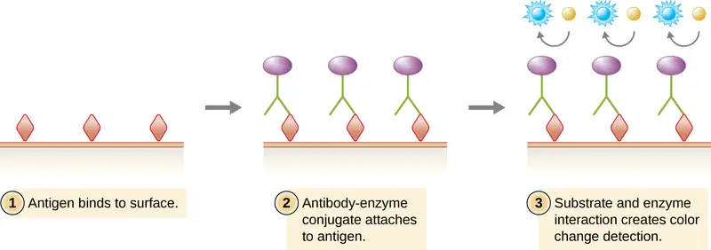
Micro Connections: The MMR Titer
The MMR vaccine is a combination vaccine that provides protection against measles, mumps, and rubella (German measles). Most people receive the MMR vaccine as children and thus have antibodies against these diseases. However, for various reasons, even vaccinated individuals may become susceptible to these diseases again later in life. For example, some children may receive only one round of the MMR vaccine instead of the recommended two. In addition, the titer of protective antibodies in an individual’s body may begin to decline with age or as the result of some medical conditions.
To determine whether the titer of antibody in an individual’s bloodstream is sufficient to provide protection, an MMR titer test can be performed. The test is a simple immunoassay that can be done quickly with a blood sample. The results of the test will indicate whether the individual still has immunity or needs another dose of the MMR vaccine.
Submitting to an MMR titer is often a pre-employment requirement for healthcare workers, especially those who will frequently be in contact with young children or immunocompromised patients. Were a healthcare worker to become infected with measles, mumps, or rubella, the individual could easily pass these diseases on to susceptible patients, leading to an outbreak. Depending on the results of the MMR titer, healthcare workers might need to be revaccinated prior to beginning work.
Immunostaining¶
One powerful use of EIA is immunostaining, in which antibody-enzyme conjugates enhance microscopy. Immunohistochemistry (IHC) is used for examining whole tissues. As seen in Figure 20.23, a section of tissue can be stained to visualize the various cell types. In this example, a mAb against CD8 was used to stain CD8 cells in a section of tonsil tissue. It is now possible to count the number of CD8 cells, determine their relative numbers versus the other cell types present, and determine the location of these cells within this tissue. Such data would be useful for studying diseases such as AIDS, in which the normal function of CD8 cells is crucial for slowing disease progression.
Immunocytochemistry (ICC) is another valuable form of immunostaining. While similar to IHC, in ICC, extracellular matrix material is stripped away, and the cell membrane is etched with alcohol to make it permeable to antibodies. This allows antibodies to pass through the cell membrane and bind to specific targets inside the cell. Organelles, cytoskeletal components, and other intracellular structures can be visualized in this way. While some ICC techniques use EIA, the enzyme can be replaced with a fluorescent molecule, making it a fluorescent immunoassay.
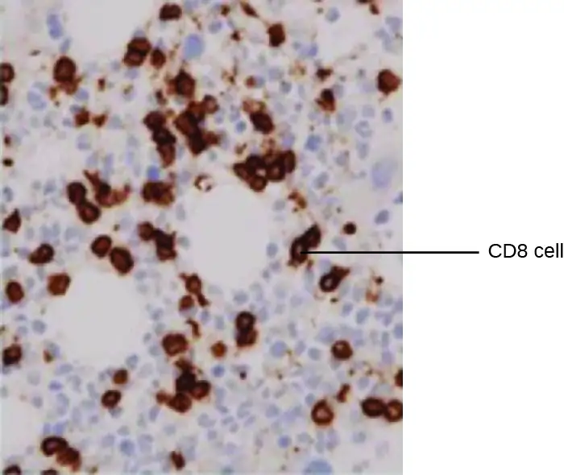
Check Your Understanding
- What is the difference between immunohistochemistry and immunocytochemistry?
- What must be true of the product of the enzymatic reaction used in immunohistochemistry?
Enzyme-linked Immunosorbent Assays (ELISAs)¶
The enzyme-linked immunosorbent assays (ELISAs) are widely used EIAs. In the direct ELISA, antigens are immobilized in the well of a microtiter plate. An antibody that is specific for a particular antigen and is conjugated to an enzyme is added to each well. If the antigen is present, then the antibody will bind. After washing to remove any unbound antibodies, a colorless substrate (chromogen) is added. The presence of the enzyme converts the substrate into a colored end product (Figure 20.22). While this technique is faster because it only requires the use of one antibody, it has the disadvantage that the signal from a direct ELISA is lower (lower sensitivity).
In a sandwich ELISA, the goal is to use antibodies to precisely quantify specific antigen present in a solution, such as antigen from a pathogen, a serum protein, or a hormone from the blood or urine to list just a few examples. The first step of a sandwich ELISA is to add the primary antibody to all the wells of a microtiter plate (Figure 20.24). The antibody sticks to the plastic by hydrophobic interactions. After an appropriate incubation time, any unbound antibody is washed away. Comparable washes are used between each of the subsequent steps to ensure that only specifically bound molecules remain attached to the plate. A blocking protein is then added (e.g., albumin or the milk protein casein) to bind the remaining nonspecific protein-binding sites in the well. Some of the wells will receive known amounts of antigen to allow the construction of a standard curve, and unknown antigen solutions are added to the other wells. The primary antibody captures the antigen and, following a wash, the secondary antibody is added, which is a polyclonal antibody that is conjugated to an enzyme. After a final wash, a colorless substrate (chromogen) is added, and the enzyme converts it into a colored end product. The color intensity of the sample caused by the end product is measured with a spectrophotometer. The amount of color produced (measured as absorbance) is directly proportional to the amount of enzyme, which in turn is directly proportional to the captured antigen. ELISAs are extremely sensitive, allowing antigen to be quantified in the nanogram (10–9 g) per mL range.
In an indirect ELISA, we quantify antigen-specific antibody rather than antigen. We can use indirect ELISA to detect antibodies against many types of pathogens, including Borrelia burgdorferi (Lyme disease) and HIV. There are three important differences between indirect and direct ELISAs as shown in Figure 20.25. Rather than using antibody to capture antigen, the indirect ELISA starts with attaching known antigen (e.g., peptides from HIV) to the bottom of the microtiter plate wells. After blocking the unbound sites on the plate, patient serum is added; if antibodies are present (primary antibody), they will bind the antigen. After washing away any unbound proteins, the secondary antibody with its conjugated enzyme is directed against the primary antibody (e.g., antihuman immunoglobulin). The secondary antibody allows us to quantify how much antigen-specific antibody is present in the patient’s serum by the intensity of the color produced from the conjugated enzyme-chromogen reaction.
As with several other tests for antibodies discussed in this chapter, there is always concern about cross-reactivity with antibodies directed against some other antigen, which can lead to false-positive results. Thus, we cannot definitively diagnose an HIV infection (or any other type of infection) based on a single indirect ELISA assay. We must confirm any suspected positive test, which is most often done using either an immunoblot that actually identifies the presence of specific peptides from the pathogen or a test to identify the nucleic acids associated with the pathogen, such as reverse transcriptase PCR (RT-PCR) or a nucleic acid antigen test.
![a) Diagram of a sandwich ELISA showing what happens in both a positive and a negative sample. First, the primary antibody binds to the well. This is shown as Ys bound to a surface. Next, blocking agent is added. This is shown as a black covering on the surface between the antibodies. Next, the sample is added; if the correct antigen is present it binds to the antibody. In the positive well a circle binds to the antibodies; in the negative well nothing binds to the antibodies. Next, any unbound sample is washed away. Next, antibody-enzyme conjugate is added. This is shown in the positive well as another Y shape that binds to the circles. This new Y shape has a purple circle at the end. These antibodies are also in the negative sample but they are not attached to anything. Next, unbound antibody-enzyme conjugate is washed away; these remain in the positive sample (because they are attached to the antigen) but are washed away in the negative sample. Finally, a substrate is added to both the positive and negative samples. The enzyme in the positive sample turns this substrate blue. b) A plastic plate with many wells. Some are clear, some are blue.](img/osc-microbio-20-04-elisa.webp)
![Diagram of indirect ELISA showing what happens in both a positive and a negative sample. First the antigens are bound to the well. This is shown as diamonds on a surface of both the positive and negative wells. Next, blocking agent is added. This is shown as a black covering on the surface between the antigens. Next, the sample is added. If the correct antibody is present it binds to the antigen. This is shown as Ys in both the positive and negative wells. Otherwise, nothing binds to the antigen. Next, any unbound sample is washed away. In the positive well, there is an antibody bound to the antigen, in the negative well, there is nothing bound to the antigen. Next, anti-human enzyme-linked antibody is added. This is shown as a Ys with a purple circle in both wells. Next, unbound antigen in washed away. In the positive sample this Y remains bound to the old antibody. In the negative well it is no longer present. Finally, substrate is added to both wells. In the positive well, the enzyme changes the substrate to a blue color.](img/osc-microbio-20-04-indirect.webp)
Check Your Understanding
- What is the purpose of the secondary antibody in a direct ELISA?
- What do the direct and indirect ELISAs quantify?
Clinical Focus: Part 2
Although contacting and testing the 1300 patients for HIV would be time consuming and expensive, administrators hoped to minimize the hospital’s liability by proactively seeking out and treating potential victims of the rogue employee’s crime. Early detection of HIV is important, and prompt treatment can slow the progression of the disease.
There are a variety of screening tests for HIV, but the most widely used is the indirect ELISA. As with other indirect ELISAs, the test works by attaching antigen (in this case, HIV peptides) to a well in a 96-well plate. If the patient is HIV positive, anti-HIV antibodies will bind to the antigen and be identified by the second antibody-enzyme conjugate.
- How accurate is an indirect ELISA test for HIV, and what factors could impact the test’s accuracy?
- Should the hospital use any other tests to confirm the results of the indirect ELISA?
Jump to the previous Clinical Focus box. Jump to the next Clinical Focus box.
Immunofiltration and Immunochromatographic Assays¶
For some situations, it may be necessary to detect or quantify antigens or antibodies that are present at very low concentration in solution. Immunofiltration techniques have been developed to make this possible. In immunofiltration, a large volume of fluid is passed through a porous membrane into an absorbent pad. An antigen attached to the porous membrane will capture antibody as it passes; alternatively, we can also attach an antibody to the membrane to capture antigen.
The method of immunofiltration has been adapted in the development of immunochromatographic assays, commonly known as lateral flow tests or strip tests. These tests are quick and easy to perform, making them popular for point-of-care use (i.e., in the doctor’s office) or in-home use. One example is the TORCH test that allows doctors to screen pregnant people or newborns for infection by an array of viruses and other pathogens (Toxoplasma, other viruses, rubella, cytomegalovirus, herpes simplex). In-home pregnancy tests are another widely used example of a lateral flow test (Figure 20.26). Immunofiltration tests are also popular in developing countries, because they are inexpensive and do not require constant refrigeration of the dried reagents. However, the technology is also built into some sophisticated laboratory equipment.
In lateral flow tests (Figure 20.27), fluids such as urine are applied to an absorbent pad on the test strip. The fluid flows by capillary action and moves through a stripe of beads with antibodies attached to their surfaces. The fluid in the sample actually hydrates the reagents, which are present in a dried state in the stripe. Antibody-coated beads made of latex or tiny gold particles will bind antigens in the test fluid. The antibody-antigen complexes then flow over a second stripe that has immobilized antibody against the antigen; this stripe will retain the beads that have bound antigen. A third control stripe binds any beads. A red color (from gold particles) or blue (from latex beads) developing at the test line indicates a positive test. If the color only develops at the control line, the test is negative.
Like ELISA techniques, lateral flow tests take advantage of antibody sandwiches, providing sensitivity and specificity. While not as quantitative as ELISA, these tests have the advantage of being fast, inexpensive, and not dependent on special equipment. Thus, they can be performed anywhere by anyone. There are some concerns about putting such powerful diagnostic tests into the hands of people who may not understand the tests’ limitations, such as the possibility of false-positive results. While home pregnancy tests have become widely accepted, at-home antibody-detection tests for diseases like HIV have raised some concerns in the medical community. Some have questioned whether self-administration of such tests should be allowed in the absence of medical personnel who can explain the test results and order appropriate confirmatory tests. However, with growing numbers of lateral flow tests becoming available, and the rapid development of lab-on-a-chip technology (Figure 20.1), home medical tests are likely to become even more commonplace in the future.
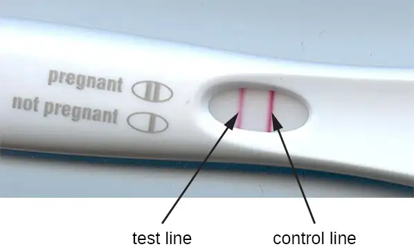
![A diagram showing lateral flow test of a urine sample. The top panel shows a positive test and the bottom shows a negative test. In both a urine sample is added; in the positive sample there are antigens present. The label reads hCG urine sample is applied to absorbent sample pad. In both cases the urine sample flows across the test area. The first region is a mix area that contains hCG-second antibody-AuNPs (hCG-GC). These then flow across the hCG strip in both samples. Next, we reach the test line. Here there are antibodies that bind the antigens in the positive sample but bind nothing in the negative sample. In the positive sample the hCG-GC also bind to the antigen, forming an antibody sandwich around the antigen. The presence of the hCG-GC causes a color change here in the positive sample but not in the negative sample. Finally, the control line contains antibodies that bind the hCG-GC directly; so these bind in both the positive and negative samples. The control line turns a color in both.](img/osc-microbio-20-04-lateral.webp)
Check Your Understanding
- What physical process does the lateral flow method require to function?
- Explain the purpose of the third strip in a lateral flow assay.
Table 20.4 compares some of the key mechanisms and examples of some of the EIAs discussed in this section as well as immunoblots, which were discussed in Detecting Antigen-Antibody Complexes.
Table 20.4
| Immunoblots & Enzyme Immunoassays | |||
|---|---|---|---|
| Type of Assay | Mechanism | Specific Procedures | Examples |
| Immunoblots | Uses enzyme-antibody conjugates to identify specific proteins that have been transferred to an absorbent membrane | Western blot: Detects the presence of a particular protein | Detecting the presence of HIV peptides (or peptides from other infectious agents) in patient sera |
| Immunostaining | Uses enzyme-antibody conjugates to stain specific molecules on or in cells | Immunohistochemistry: Used to stain specific cells in a tissue | Stain for presence of CD8 cells in host tissue |
| Enzyme-linked immunosorbent assay (ELISA) | Uses enzyme-antibody conjugates to quantify target molecules | Direct ELISA: Uses a single antibody to detect the presence of an antigen | Detection of HIV antigen p24 up to one month after being infected |
| Indirect ELISA: Measures the amount of antibody produced against an antigen | Detection of HIV antibodies in serum | ||
| Immunochromatographic (lateral flow) assays | Techniques use the capture of flowing, color-labeled antigen-antibody complexes by fixed antibody for disease diagnosis | Sandwich ELISA: Measures the amount of antigen bound by the antibody | Detection of antibodies for various pathogens in patient sera (e.g., rapid strep, malaria dipstick) |
| Pregnancy test detecting human chorionic gonadotrophin in urine | |||
Clinical Focus: Part 3
Although the indirect ELISA for HIV is a sensitive assay, there are several complicating considerations. First, if an infected person is tested too soon after becoming infected, the test can yield false-negative results. The seroconversion window is generally about three weeks, but in some cases, it can be more than two months.
In addition to false negatives, false positives can also occur, usually due to previous infections with other viruses that induce cross-reacting antibodies. The false-positive rate depends on the particular brand of test used, but 0.5% is not unusual.10 Because of the possibility of a false positive, all positive tests are followed up with a confirmatory test. This confirmatory test is often an immunoblot (western blot) in which HIV peptides from the patient’s blood are identified using an HIV-specific mAb-enzyme conjugate. A positive western blot would confirm an HIV infection and a negative blot would confirm the absence of HIV despite the positive ELISA.
Unfortunately, western blots for HIV antigens often yield indeterminant results, in which case, they neither confirm nor invalidate the results of the indirect ELISA. In fact, the rate of indeterminants can be 10–49% (which is why, combined with their cost, western blots are not used for screening). Similar to the indirect ELISA, an indeterminant western blot can occur because of cross-reactivity or previous viral infections, vaccinations, or autoimmune diseases.
- Of the 1300 patients being tested, how many false-positive ELISA tests would be expected?
- Of the false positives, how many indeterminant western blots could be expected?
- How would the hospital address any cases in which a patient’s western blot was indeterminant?
Jump to the previous Clinical Focus box. Jump to the next Clinical Focus box.
20.5 Fluorescent Antibody Techniques¶
Learning Objectives
By the end of this section, you will be able to:
- Describe the benefits of immunofluorescent antibody assays in comparison to nonfluorescent assays
- Compare direct and indirect fluorescent antibody assays
- Explain how a flow cytometer can be used to quantify specific subsets of cells present in a complex mixture of cell types
- Explain how a fluorescence-activated cell sorter can be used to separate unique types of cells
Rapid visualization of bacteria from a clinical sample such as a throat swab or sputum can be achieved through fluorescent antibody (FA) techniques that attach a fluorescent marker (fluorogen) to the constant region of an antibody, resulting in a reporter molecule that is quick to use, easy to see or measure, and able to bind to target markers with high specificity. We can also label cells, allowing us to precisely quantify particular subsets of cells or even purify these subsets for further research.
As with the enzyme assays, FA methods may be direct, in which a labeled mAb binds an antigen, or indirect, in which secondary polyclonal antibodies bind patient antibodies that react to a prepared antigen. Applications of these two methods were demonstrated in Figure 2.19. FA methods are also used in automated cell counting and sorting systems to enumerate or segregate labeled subpopulations of cells in a sample.
Direct Fluorescent Antibody Techniques¶
Direct fluorescent antibody (DFA) tests use a fluorescently labeled mAb to bind and illuminate a target antigen. DFA tests are particularly useful for the rapid diagnosis of bacterial diseases. For example, fluorescence-labeled antibodies against Streptococcus pyogenes (group A strep) can be used to obtain a diagnosis of strep throat from a throat swab. The diagnosis is ready in a matter of minutes, and the patient can be started on antibiotics before even leaving the clinic. DFA techniques may also be used to diagnose pneumonia caused by Mycoplasma pneumoniae or Legionella pneumophila from sputum samples (Figure 20.28). The fluorescent antibodies bind to the bacteria on a microscope slide, allowing ready detection of the bacteria using a fluorescence microscope. Thus, the DFA technique is valuable for visualizing certain bacteria that are difficult to isolate or culture from patient samples.
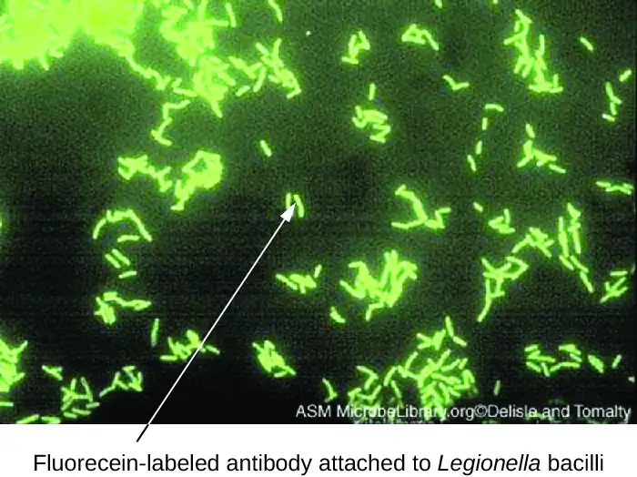
Link to Learning
Watch the animation on this page to review the procedures of the direct fluorescent antibody test.
Check Your Understanding
- In a direct fluorescent antibody test, what does the fluorescent antibody bind to?
Indirect Fluorescent Antibody Techniques¶
Indirect fluorescent antibody (IFA) tests (Figure 20.29) are used to look for antibodies in patient serum. For example, an IFA test for the diagnosis of syphilis uses T. pallidum cells isolated from a lab animal (the bacteria cannot be grown on lab media) and a smear prepared on a glass slide. Patient serum is spread over the smear and anti-treponemal antibodies, if present, are allowed to bind. The serum is washed off and a secondary antibody added. The secondary antibody is an antihuman immunoglobulin conjugated to a fluorogen. On examination, the T. pallidum bacteria will only be visible if they have been bound by the antibodies from the patient’s serum.
The IFA test for syphilis provides an important complement to the VDRL test discussed in Detecting Antigen-Antibody Complexes. The VDRL is more likely to generate false-positive reactions than the IFA test; however, the VDRL is a better test for determining whether an infection is currently active.
IFA tests are also useful for the diagnosis of autoimmune diseases. For example, systemic lupus erythematosus (SLE) (see Autoimmune Disorders) is characterized by elevated expression levels of antinuclear antibodies (ANA). These autoantibodies can be expressed against a variety of DNA-binding proteins and even against DNA itself. Because autoimmunity is often difficult to diagnose, especially early in disease progression, testing for ANA can be a valuable clue in making a diagnosis and starting appropriate treatment.
The IFA for ANA begins by fixing cells grown in culture to a glass slide and making them permeable to antibody. The slides are then incubated with serial dilutions of serum from the patient. After incubation, the slide is washed to remove unbound proteins, and the fluorescent antibody (antihuman IgG conjugated to a fluorogen) added. After an incubation and wash, the cells can be examined for fluorescence evident around the nucleus (Figure 20.30). The titer of ANA in the serum is determined by the highest dilution showing fluorescence. Because many healthy people express ANA, the American College of Rheumatology recommends that the titer must be at least 1:40 in the presence of symptoms involving two or more organ systems to be considered indicative of SLE.11
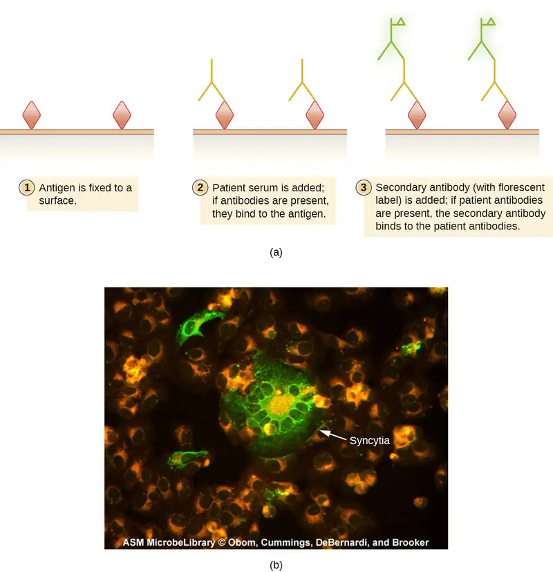
Check Your Understanding
- In an indirect fluorescent antibody test, what does the fluorescent antibody bind to?
- What is the ANA test looking for?
Flow Cytometry¶
Fluorescently labeled antibodies can be used to quantify cells of a specific type in a complex mixture using flow cytometry (Figure 20.31), an automated, cell-counting system that detects fluorescing cells as they pass through a narrow tube one cell at a time. For example, in HIV infections, it is important to know the level of CD4 T cells in the patient’s blood; if the numbers fall below 500 per μL of blood, the patient becomes more likely to acquire opportunistic infections; below 200 per μL, the patient can no longer mount a useful adaptive immune response at all. The analysis begins by incubating a mixed-cell population (e.g., white blood cells from a donor) with a fluorescently labeled mAb specific for a subpopulation of cells (e.g., anti-CD4). Some experiments look at two cell markers simultaneously by adding a different fluorogen to the appropriate mAb. The cells are then introduced to the flow cytometer through a narrow capillary that forces the cells to pass in single file. A laser is used to activate the fluorogen. The fluorescent light radiates out in all directions, so the fluorescence detector can be positioned at an angle from the incident laser light.
Figure 20.31 shows the obscuration bar in front of the forward-scatter detector that prevents laser light from hitting the detector. As a cell passes through the laser bar, the forward-scatter detector detects light scattered around the obscuration bar. The scattered light is transformed into a voltage pulse, and the cytometer counts a cell. The fluorescence from a labeled cell is detected by the side-scatter detectors. The light passes through various dichroic mirrors such that the light emitted from the fluorophore is received by the correct detector.
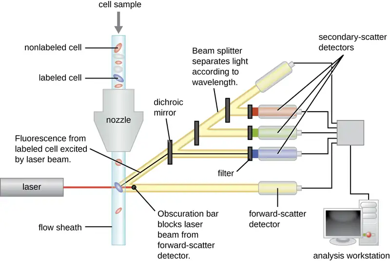
Data are collected from both the forward- and side-scatter detectors. One way these data can be presented is in the form of a histogram. The forward scatter is placed on the y-axis (to represent the number of cells), and the side scatter is placed on the x-axis (to represent the fluoresence of each cell). The scaling for the x-axis is logarithmic, so fluorescence intensity increases by a factor of 10 with each unit increase along the axis. Figure 20.32 depicts an example in which a culture of cells is combined with an antibody attached to a fluorophore to detect CD8 cells and then analyzed by flow cytometry. The histogram has two peaks. The peak on the left has lower fluorescence readings, representing the subset of the cell population (approximately 30 cells) that does not fluoresce; hence, they are not bound by antibody and therefore do not express CD8. The peak on the right has higher fluorescence readings, representing the subset of the cell population (approximately 100 cells) that show fluorescence; hence, they are bound by the antibody and therefore do express CD8.
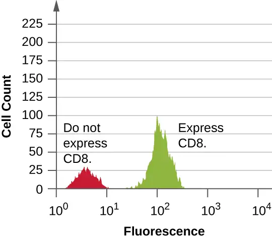
Check Your Understanding
- What is the purpose of the laser in a flow cytometer?
- In the output from a flow cytometer, the area under the histogram is equivalent to what?
Clinical Focus: Resolution
After notifying all 1300 patients, the hospital begins scheduling HIV screening. Appointments were scheduled a minimum of 3 weeks after the patient’s last hospital visit to minimize the risk of false negatives. Because some false positives were anticipated, the public health physician set up a counseling protocol for any patient whose indirect ELISA came back positive.
Of the 1300 patients, eight tested positive using the ELISA. Five of these tests were invalidated by negative western blot tests, but one western blot came back positive, confirming that the patient had indeed contracted HIV. The two remaining western blots came back indeterminate. These individuals had to submit to a third test, a PCR, to confirm the presence or absence of HIV sequences. Luckily, both patients tested negative.
As for the lone patient confirmed to have HIV, the tests cannot prove or disprove any connection to the syringes compromised by the former hospital employee. Even so, the hospital’s insurance will fully cover the patient’s treatment, which began immediately.
Although we now have drugs that are typically effective at controlling the progression of HIV and AIDS, there is still no cure. If left untreated, or if the drug regimen fails, the patient will experience a gradual decline in the number of CD4 helper T cells, resulting in severe impairment of all adaptive immune functions. Even moderate declines of helper T cell numbers can result in immunodeficiency, leaving the patient susceptible to opportunistic infections. To monitor the status of the patient’s helper T cells, the hospital will use flow cytometry. This sensitive test allows physicians to precisely determine the number of helper T cells so they can adjust treatment if the number falls below 500 cells/µL.
Jump to the previous Clinical Focus box.
Cell Sorting Using Immunofluorescence¶
The flow cytometer and immunofluorescence can also be modified to sort cells from a single sample into purified subpopulations of cells for research purposes. This modification of the flow cytometer is called a fluorescence-activated cell sorter (FACS). In a FACS, fluorescence by a cell induces the device to put a charge on a droplet of the transporting fluid containing that cell. The charge is specific to the wavelength of the fluorescent light, which allows for differential sorting by those different charges. The sorting is accomplished by an electrostatic deflector that moves the charged droplet containing the cell into one collecting vessel or another. The process results in highly purified subpopulations of cells.
One limitation of a FACS is that it only works on isolated cells. Thus, the method would work in sorting white blood cells, since they exist as isolated cells. But for cells in a tissue, flow cytometry can only be applied if we can excise the tissue and separate it into single cells (using proteases to cleave cell-cell adhesion molecules) without disrupting cell integrity. This method may be used on tumors, but more often, immunohistochemistry and immunocytochemistry are used to study cells in tissues.
Link to Learning
Watch videos to learn more about how flow cytometry and a FACS work.
Check Your Understanding
- In fluorescence activated cell sorting, what characteristic of the target cells allows them to be separated?
Table 20.5 compares the mechanisms of the fluorescent antibody techniques discussed in this section.
Table 20.5
| Fluorescent Antibody Techniques | ||
|---|---|---|
| Type of Assay | Mechanism | Examples |
| Direct fluorescent antibody (DFA) | Uses fluorogen-antibody conjugates to label bacteria from patient samples | Visualizing Legionella pneumophila from a throat swab |
| Indirect fluorescent antibody (IFA) | Detects disease-specific antibodies in patent serum | Diagnosing syphilis; detecting antinuclear antibodies (ANA) for lupus and other autoimmune diseases |
| Flow cytometry | Labels cell membranes with fluorogen-antibody conjugate markers excited by a laser; machine counts the cell and records the relative fluorescence | Counting the number of fluorescently labeled CD4 or CD8 cells in a sample |
| Fluorescence activated cell sorter (FACS) | Form of flow cytometry that both counts cells and physically separates them into pools of high and low fluorescence cells | Sorting cancer cells |
Chapter Review¶
Key Concepts and Summary¶
20.1 Polyclonal and Monoclonal Antibody Production¶
- Antibodies bind with high specificity to antigens used to challenge the immune system, but they may also show cross-reactivity by binding to other antigens that share chemical properties with the original antigen.
- Injection of an antigen into an animal will result in a polyclonal antibody response in which different antibodies are produced that react with the various epitopes on the antigen.
- Polyclonal antisera are useful for some types of laboratory assays, but other assays require more specificity. Diagnostic tests that use polyclonal antisera are typically only used for screening because of the possibility of false-positive and false-negative results.
- Monoclonal antibodies provide higher specificity than polyclonal antisera because they bind to a single epitope and usually have high affinity.
- Monoclonal antibodies are typically produced by culturing antibody-secreting hybridomas derived from mice. mAbs are currently used to treat cancer, but their exorbitant cost has prevented them from being used more widely to treat infectious diseases. Still, their potential for laboratory and clinical use is driving the development of new, cost-effective solutions such as plantibodies.
20.2 Detecting Antigen-Antibody Complexes¶
- When present in the correct ratio, antibody and antigen will form a precipitin, or lattice that precipitates out of solution.
- A precipitin ring test can be used to visualize lattice formation in solution. The Ouchterlony assay demonstrates lattice formation in a gel. The radial immunodiffusion assay is used to quantify antigen by measuring the size of a precipitation zone in a gel infused with antibodies.
- Insoluble antigens in suspension will form flocculants when bound by antibodies. This is the basis of the VDRL test for syphilis in which anti-treponemal antibodies bind to cardiolipin in suspension.
- Viral infections can be detected by quantifying virus-neutralizing antibodies in a patient’s serum.
- Different antibody classes in plasma or serum are identified by using immunoelectrophoresis.
- The presence of specific antigens (e.g., bacterial or viral proteins) in serum can be demonstrated by western blot assays, in which the proteins are transferred to a nitrocellulose membrane and identified using labeled antibodies.
- In the complement fixation test, complement is used to detect antibodies against various pathogens.
20.3 Agglutination Assays¶
- Antibodies can agglutinate cells or large particles into a visible matrix. Agglutination tests are often done on cards or in microtiter plates that allow multiple reactions to take place side by side using small volumes of reagents.
- Using antisera against certain proteins allows identification of serovars within species of bacteria.
- Detecting antibodies against a pathogen can be a powerful tool for diagnosing disease, but there is a period of time before patients go through seroconversion and the level of antibodies becomes detectable.
- Agglutination of latex beads in indirect agglutination assays can be used to detect the presence of specific antigens or specific antibodies in patient serum.
- The presence of some antibacterial and antiviral antibodies can be confirmed by the use of the direct Coombs’ test, which uses Coombs’ reagent to cross-link antibodies bound to red blood cells and facilitate hemagglutination.
- Some viruses and bacteria will bind and agglutinate red blood cells; this interaction is the basis of the direct hemagglutination assay, most often used to determine the titer of virus in solution.
- Neutralization assays quantify the level of virus-specific antibody by measuring the decrease in hemagglutination observed after mixing patient serum with a standardized amount of virus.
- Hemagglutination assays are also used to screen and cross-match donor and recipient blood to ensure that the transfusion recipient does not have antibodies to antigens in the donated blood.
20.4 EIAs and ELISAs¶
- Enzyme immunoassays (EIA) are used to visualize and quantify antigens. They use an antibody conjugated to an enzyme to bind the antigen, and the enzyme converts a substrate into an observable end product. The substrate may be either a chromogen or a fluorogen.
- Immunostaining is an EIA technique for visualizing cells in a tissue (immunohistochemistry) or examining intracellular structures (immunocytochemistry).
- Direct ELISA is used to quantify an antigen in solution. The primary antibody captures the antigen, and the secondary antibody delivers an enzyme. Production of end product from the chromogenic substrate is directly proportional to the amount of captured antigen.
- Indirect ELISA is used to detect antibodies in patient serum by attaching antigen to the well of a microtiter plate, allowing the patient (primary) antibody to bind the antigen and an enzyme-conjugated secondary antibody to detect the primary antibody.
- Immunofiltration and immunochromatographic assays are used in lateral flow tests, which can be used to diagnose pregnancy and various diseases by detecting color-labeled antigen-antibody complexes in urine or other fluid samples
20.5 Fluorescent Antibody Techniques¶
- Immunofluorescence assays use antibody-fluorogen conjugates to illuminate antigens for easy, rapid detection.
- Direct immunofluorescence can be used to detect the presence of bacteria in clinical samples such as sputum.
- Indirect immunofluorescence detects the presence of antigen-specific antibodies in patient sera. The fluorescent antibody binds to the antigen-specific antibody rather than the antigen.
- The use of indirect immunofluorescence assays to detect antinuclear antibodies is an important tool in the diagnosis of several autoimmune diseases.
- Flow cytometry uses fluorescent mAbs against cell-membrane proteins to quantify specific subsets of cells in complex mixtures.
- Fluorescence-activated cell sorters are an extension of flow cytometry in which fluorescence intensity is used to physically separate cells into high and low fluorescence populations.
Multiple Choice¶
20.1 Polyclonal and Monoclonal Antibody Production¶
1. For many uses in the laboratory, polyclonal antibodies work well, but for some types of assays, they lack sufficient ________ because they cross-react with inappropriate antigens.
- specificity
- sensitivity
- accuracy
- reactivity
Answer
A
2. How are monoclonal antibodies produced?
- Antibody-producing B cells from a mouse are fused with myeloma cells and then the cells are grown in tissue culture.
- A mouse is injected with an antigen and then antibodies are harvested from its serum.
- They are produced by the human immune system as a natural response to an infection.
- They are produced by a mouse’s immune system as a natural response to an infection.
Answer
A
20.2 Detecting Antigen-Antibody Complexes¶
3. The formation of ________ is a positive result in the VDRL test.
- flocculant
- precipitin
- coagulation
- a bright pink color
Answer
A
4. The titer of a virus neutralization test is the highest dilution of patient serum
- in which there is no detectable viral DNA.
- in which there is no detectable viral protein.
- that completely blocks plaque formation.
- that reduces plaque formation by at least 50%.
Answer
D
5. In the Ouchterlony assay, we see a sharp precipitin arc form between antigen and antiserum. Why does this arc remain visible for a long time?
- The antibody molecules are too large to diffuse through the agar.
- The precipitin lattice is too large to diffuse through the agar.
- Methanol, added once the arc forms, denatures the protein and blocks diffusion.
- The antigen molecules are chemically coupled to the gel matrix.
Answer
B
20.3 Agglutination Assays¶
6. We use antisera to distinguish between various ________ within a species of bacteria.
- isotypes
- serovars
- subspecies
- lines
Answer
B
7. When using antisera to characterize bacteria, we will often link the antibodies to ________ to better visualize the agglutination.
- latex beads
- red blood cells
- other bacteria
- white blood cells
Answer
A
8. The antibody screening test that is done along with pretransfusion blood typing is used to ensure that the recipient
- does not have a previously undetected bacterial or viral infection.
- is not immunocompromised.
- actually does have the blood type stated in the online chart.
- is not making antibodies against antigens outside the ABO or Rh systems.
Answer
D
9. The direct Coombs’ test is designed to detect when people have a disease that causes them to
- have an excessively high fever.
- quit making antibodies.
- make too many red blood cells.
- produce antibodies that bind to their own red blood cells.
Answer
D
10. Viral hemagglutination assays only work with certain types of viruses because
- the virus must be able to cross-link red blood cells directly.
- the virus must be able to lyse red blood cells.
- the virus must not be able to lyse red blood cells.
- other viruses are too dangerous to work with in a clinical lab setting.
Answer
A
20.4 EIAs and ELISAs¶
11. In an enzyme immunoassay, the enzyme
- is bound by the antibody’s antigen-binding site.
- is attached to the well of a microtiter plate.
- is conjugated to the suspect antigen.
- is bound to the constant region of the secondary antibody.
Answer
D
12. When using an EIA to study microtubules or other structures inside a cell, we first chemically fix the cell and then treat the cells with alcohol. What is the purpose of this alcohol treatment?
- It makes holes in the cell membrane large enough for antibodies to pass.
- It makes the membrane sticky so antibodies will bind and be taken up by receptor-mediated endocytosis.
- It removes negative charges from the membrane, which would otherwise repulse the antibodies.
- It prevents nonspecific binding of the antibodies to the cell membrane.
Answer
A
13. In a lateral-flow pregnancy test, you see a blue band form on the control line and no band form on the test line. This is probably a ________ test for pregnancy.
- positive
- false-positive
- false-negative
- negative
Answer
D
14. When performing an FEIA, the fluorogen replaces the ________ that is used in an EIA.
- antigen
- chromogenic substrate
- enzyme
- secondary antibody
Answer
B
20.5 Fluorescent Antibody Techniques¶
15. Suppose you need to quantify the level of CD8 T cells in the blood of a patient recovering from influenza. You treat a sample of the patient’s white blood cells using a fluorescent mAb against CD8, pass the cells through a flow cytometer, and produce the histogram shown below. The area under the peak to the left (blue) is three times greater than the area of the peak on the right (red). What can you determine from these data?
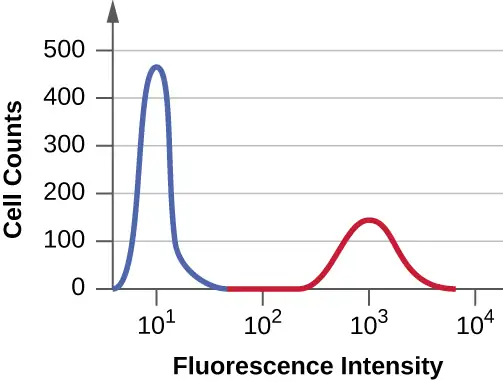
- There are no detectable CD8 cells.
- There are three times as many CD4 cells than CD8 cells.
- There are three times as many CD8 cells than CD4 cells.
- CD8 cells make up about one-fourth of the total number of cells.
Answer
D
16. In the data described in the previous question, the average fluorescence intensity of cells in the second (red) peak is about ________ that in the first (blue) peak.
- three times
- 100 times
- one-third
- 1000 times
Answer
B
17. In a direct fluorescent antibody test, which of the following would we most likely be looking for using a fluorescently-labeled mAb?
- bacteria in a patient sample
- bacteria isolated from a patient and grown on agar plates
- antiserum from a patient smeared onto a glass slide
- antiserum from a patient that had bound to antigen-coated beads
Answer
A
Fill in the Blank¶
20.1 Polyclonal and Monoclonal Antibody Production¶
18. When we inject an animal with the same antigen a second time a few weeks after the first, ________ takes place, which means the antibodies produced after the second injection will on average bind the antigen more tightly.
Answer
affinity maturation
19. When using mAbs to treat disease in humans, the mAbs must first be ________ by replacing the mouse constant region DNA with human constant region DNA.
Answer
humanized
20. If we used normal mouse mAbs to treat human disease, multiple doses would cause the patient to respond with ________ against the mouse antibodies.
Answer
neutralizing antibodies
21. A polyclonal response to an infection occurs because most antigens have multiple ________,
Answer
epitopes
20.2 Detecting Antigen-Antibody Complexes¶
22. When slowly adding antigen to an antiserum, the amount of precipitin would gradually increase until reaching the ________; addition of more antigen after this point would actually decrease the amount of precipitin.
Answer
equivalence zone or zone of equivalence
23. The radial immunodiffusion test quantifies antigen by mixing ________ into a gel and then allowing antigen to diffuse out from a well cut in the gel.
Answer
antiserum
20.3 Agglutination Assays¶
24. In the major cross-match, we mix ________ with the donor red blood cells and look for agglutination.
Answer
patient serum
25. Coombs’ reagent is an antiserum with antibodies that bind to human ________.
Answer
immunoglobulins/antibodies and/or complement
20.4 EIAs and ELISAs¶
26. To detect antibodies against bacteria in the bloodstream using an EIA, we would run a(n) ________, which we would start by attaching antigen from the bacteria to the wells of a microtiter plate.
Answer
indirect ELISA
20.5 Fluorescent Antibody Techniques¶
27. In flow cytometry, cell subsets are labeled using a fluorescent antibody to a membrane protein. The fluorogen is activated by a(n) ________ as the cells pass by the detectors.
Answer
laser
28. Fluorescence in a flow cytometer is measured by a detector set at an angle to the light source. There is also an in-line detector that can detect cell clumps or ________.
Answer
fragments
Short Answer¶
20.1 Polyclonal and Monoclonal Antibody Production¶
29. Describe two reasons why polyclonal antibodies are more likely to exhibit cross-reactivity than monoclonal antibodies.
20.2 Detecting Antigen-Antibody Complexes¶
30. Explain why hemolysis in the complement fixation test is a negative test for infection.
31. What is meant by the term “neutralizing antibodies,” and how can we quantify this effect using the viral neutralization assay?
20.3 Agglutination Assays¶
32. Explain why the titer of a direct hemagglutination assay is the highest dilution that still causes hemagglutination, whereas in the viral hemagglutination inhibition assay, the titer is the highest dilution at which hemagglutination is not observed.
33. Why would a doctor order a direct Coombs’ test when a baby is born with jaundice?
20.4 EIAs and ELISAs¶
34. Why is it important in a sandwich ELISA that the antigen has multiple epitopes? And why might it be advantageous to use polyclonal antisera rather than mAb in this assay?
35. The pregnancy test strip detects the presence of human chorionic gonadotrophin in urine. This hormone is initially produced by the fetus and later by the placenta. Why is the test strip preferred for this test rather than using either a direct or indirect ELISA with their more quantifiable results?
Critical Thinking¶
20.1 Polyclonal and Monoclonal Antibody Production¶
36. Suppose you were screening produce in a grocery store for the presence of E. coli contamination. Would it be better to use a polyclonal anti-E. coli antiserum or a mAb against an E. coli membrane protein? Explain.
20.2 Detecting Antigen-Antibody Complexes¶
37. Both IgM and IgG antibodies can be used in precipitation reactions. However, one of these immunoglobulin classes will form precipitates at much lower concentrations than the other. Which class is this, and why is it so much more efficient in this regard?
20.3 Agglutination Assays¶
38. When shortages of donated blood occur, O-negative blood may be given to patients, even if they have a different blood type. Why is this the case? If O-negative blood supplies were depleted, what would be the next-best choice for a patient with a different blood type in critical need of a transfusion? Explain your answers.
20.4 EIAs and ELISAs¶
39. Label the primary and secondary antibodies, and discuss why the production of end product will be proportional to the amount of antigen.
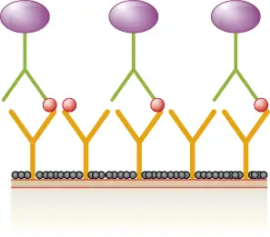
20.5 Fluorescent Antibody Techniques¶
40. A patient suspected of having syphilis is tested using both the VDRL test and IFA. The IFA test comes back positive, but the VDRL test is negative. What is the most likely reason for these results?
41. A clinician suspects that a patient with pneumonia may be infected by Legionella pneumophila. Briefly describe two reasons why a DFA test might be better for detecting this pathogen than standard bacteriology techniques.
Adapted from Microbiology by OpenStax, licensed under CC BY 4.0. Access the original for free at openstax.org. Changes: converted to the web reading format of The Open Book Project.
-
Chin, Curtis D. et al., “Mobile Device for Disease Diagnosis and Data Tracking in Resource-Limited Settings,” Clinical Chemistry 59, no. 4 (2013): 629-40. ↩
-
Evarts, H., “Fast, Low-Cost Device Uses the Cloud to Speed Up Testing for HIV and More,” January 24, 2013. Accessed July 14, 2016. http://engineering.columbia.edu/fast-low-cost-device-uses-cloud-speed-diagnostic-testing-hiv-and-more. ↩
-
Saylor, Carolyn, Ekaterina Dadachova and Arturo Casadevall, “Monoclonal Antibody-Based Therapies for Microbial Diseases,” Vaccine 27 (2009): G38-G46. ↩
-
Nakanishi, Katsuhiro et al., “Production of Hybrid-IgG/IgA Plantibodies with Neutralizing Activity against Shiga Toxin 1,” PloS One 8, no. 11 (2013): e80712. ↩
-
Qiu, Xiangguo et al., “Reversion of Advanced Ebola Virus Disease in Nonhuman Primates with ZMapp,” Nature 514 (2014): 47–53. ↩
-
Ouchterlony, Örjan, “In Vitro Method for Testing the Toxin-Producing Capacity of Diphtheria Bacteria,” Acta Pathologica Microbiologica Scandinavica 26, no. 4 (1949): 516-24. ↩
-
Tiselius, Arne, “Electrophoresis of Serum Globulin: Electrophoretic Analysis of Normal and Immune Sera,” Biochemical Journal 31, no. 9 (1937): 1464. ↩
-
Tiselius, Arne and Elvin A. Kabat. “An Electrophoretic Study of Immune Sera and Purified Antibody Preparations,” The Journal of Experimental Medicine 69, no. 1 (1939): 119-31. ↩
-
Lancefield, Rebecca C., “The Antigenic Complex of Streptococcus haemoliticus. I. Demonstration of a Type-Specific Substance in Extracts of Streptococcus haemolyticus,” The Journal of Experimental Medicine 47, no. 1 (1928): 91-103. ↩
-
Thomas, Justin G., Victor Jaffe, Judith Shaffer, and Jose Abreu, “HIV Testing: US Recommendations 2014,” Osteopathic Family Physician 6, no. 6 (2014). ↩
-
Gill, James M., ANNA M. Quisel, PETER V. Rocca, and DENE T. Walters. “Diagnosis of systemic lupus erythematosus.” American family physician 68, no. 11 (2003): 2179-2186. ↩